# Librerie principali
library(readxl) # Lettura file Excel
library(tseries) # Test ADF, funzioni per serie storiche
library(forecast) # Modelli ARIMA, auto.arima, diagnostica
library(urca) # Test di radice unitaria (ur.df), cointegrazione (ca.jo)
library(vars) # Modelli VAR, Granger-causalità, IRF, FEVD
library(lmtest) # Test diagnostici (Breusch-Godfrey, ecc.)
library(dynlm) # Modelli dinamici lineari
library(ggplot2) # Grafici
library(gridExtra) # Layout grafici multipliAnalisi Econometrica di Serie Storiche Macroeconomiche USA
Modelli Statistici per Dati Economici — Progetto Finale
1 Introduzione
1.1 Obiettivo del progetto
Questo progetto applica le metodologie di analisi delle serie storiche studiate nel corso di Modelli Statistici per Dati Economici (MSDE) a un dataset di variabili macroeconomiche statunitensi provenienti dal database FRED (Federal Reserve Economic Data). L’analisi segue un percorso progressivo che parte dall’esplorazione univariata fino ad arrivare alla modellazione multivariata e alla cointegrazione, coprendo i seguenti ambiti:
- Analisi univariata: decomposizione classica, identificazione e stima di modelli ARIMA secondo l’approccio Box-Jenkins, diagnostica dei residui e previsione.
- Analisi bivariata e cross-correlazione: studio delle relazioni dinamiche tra coppie di variabili tramite la funzione di cross-correlazione (CCF).
- Modelli Transfer Function (TFM): identificazione di relazioni input-output tra variabili con prewhitening.
- Modelli VAR: stima di modelli vettoriali autoregressivi, selezione dell’ordine, test di Granger-causalità, funzioni di risposta all’impulso (IRF) e decomposizione della varianza dell’errore di previsione (FEVD).
- Cointegrazione: test di radice unitaria (ADF), procedura di Engle-Granger e procedura di Johansen per la stima del VECM.
- Confronto tra modelli: selezione del modello migliore sulla base di criteri informativi, accuratezza previsiva e coerenza economica.
1.2 Il dataset
Il dataset contiene sei serie storiche mensili dal FRED, relative all’economia statunitense:
| Variabile | Descrizione | Periodo |
|---|---|---|
produzione_industriale |
Indice di produzione industriale | Gen 1950 – Ago 2025 |
indice_prezzi_consumo |
CPI — Indice dei prezzi al consumo | Gen 1950 – Ago 2025 |
disoccupazione |
Tasso di disoccupazione (%) | Gen 1950 – Ago 2025 |
tasso_fed_funds |
Tasso dei Federal Funds (%) | Lug 1954 – Ago 2025 |
occupazione_non_agricola |
Occupati non agricoli (migliaia) | Gen 1950 – Ago 2025 |
consumi_personali |
Consumi personali (miliardi di USD) | Gen 1959 – Ago 2025 |
1.3 Caricamento librerie e dati
# Caricamento del foglio "mensili"
dati <- read_excel("serie_macro_fred.xlsx", sheet = "mensili")
# Rinominiamo le colonne per comodità
colnames(dati) <- c("data", "prod_ind", "cpi", "disoccupazione",
"fed_funds", "occupazione", "consumi")
# Visualizzazione struttura
str(dati)tibble [908 × 7] (S3: tbl_df/tbl/data.frame)
$ data : POSIXct[1:908], format: "1950-01-01" "1950-02-01" ...
$ prod_ind : num [1:908] 14 14.1 14.5 15 15.3 ...
$ cpi : num [1:908] 23.5 23.5 23.6 23.6 23.7 23.8 24.1 24.3 24.4 24.6 ...
$ disoccupazione: num [1:908] 6.5 6.4 6.3 5.8 5.5 5.4 5 4.5 4.4 4.2 ...
$ fed_funds : num [1:908] NA NA NA NA NA NA NA NA NA NA ...
$ occupazione : num [1:908] 43526 43297 43954 44382 44718 ...
$ consumi : num [1:908] NA NA NA NA NA NA NA NA NA NA ...summary(dati) data prod_ind cpi
Min. :1950-01-01 00:00:00 Min. : 14.00 Min. : 23.50
1st Qu.:1968-11-23 12:00:00 1st Qu.: 37.27 1st Qu.: 35.48
Median :1987-10-16 12:00:00 Median : 59.85 Median :115.35
Mean :1987-10-16 13:57:21 Mean : 62.22 Mean :127.16
3rd Qu.:2006-09-08 12:00:00 3rd Qu.: 93.07 3rd Qu.:202.60
Max. :2025-08-01 00:00:00 Max. :104.21 Max. :323.98
disoccupazione fed_funds occupazione consumi
Min. : 2.500 Min. : 0.050 Min. : 43297 Min. : 306.1
1st Qu.: 4.400 1st Qu.: 1.887 1st Qu.: 69182 1st Qu.: 1050.9
Median : 5.500 Median : 4.330 Median :103255 Median : 4131.5
Mean : 5.691 Mean : 4.607 Mean :100889 Mean : 5944.0
3rd Qu.: 6.700 3rd Qu.: 6.138 3rd Qu.:132366 3rd Qu.: 9979.2
Max. :14.800 Max. :19.100 Max. :159540 Max. :20802.0
NA's :54 NA's :109 Per garantire la massima disponibilità di osservazioni comuni, restringiamo il campione al periodo in cui tutte le variabili sono disponibili: da gennaio 1959 in poi (data di inizio dei consumi personali). Per il Transfer Function Model, che richiede il tasso dei Fed Funds, il campione partirà da luglio 1954.
# Campione completo: da gennaio 1959 (tutte le variabili disponibili)
dati_completo <- dati[dati$data >= as.Date("1959-01-01") &
!is.na(dati$consumi), ]
# Creazione delle serie storiche ts
prod_ind <- ts(dati_completo$prod_ind, start = c(1959, 1), frequency = 12)
cpi <- ts(dati_completo$cpi, start = c(1959, 1), frequency = 12)
disoc <- ts(dati_completo$disoccupazione, start = c(1959, 1), frequency = 12)
fed_funds <- ts(dati_completo$fed_funds, start = c(1959, 1), frequency = 12)
occupaz <- ts(dati_completo$occupazione, start = c(1959, 1), frequency = 12)
consumi <- ts(dati_completo$consumi, start = c(1959, 1), frequency = 12)
# Trasformazione logaritmica per le variabili con trend esponenziale
log_prod <- log(prod_ind)
log_cpi <- log(cpi)
log_consumi <- log(consumi)
log_occupaz <- log(occupaz)par(mfrow = c(3, 2), mar = c(4, 4, 3, 1))
plot(prod_ind, main = "Produzione Industriale", ylab = "Indice", col = "steelblue")
plot(cpi, main = "CPI — Indice Prezzi al Consumo", ylab = "Indice", col = "firebrick")
plot(disoc, main = "Tasso di Disoccupazione", ylab = "%", col = "darkgreen")
plot(fed_funds, main = "Tasso Fed Funds", ylab = "%", col = "purple")
plot(occupaz, main = "Occupazione Non Agricola", ylab = "Migliaia", col = "darkorange")
plot(consumi, main = "Consumi Personali", ylab = "Mld USD", col = "brown")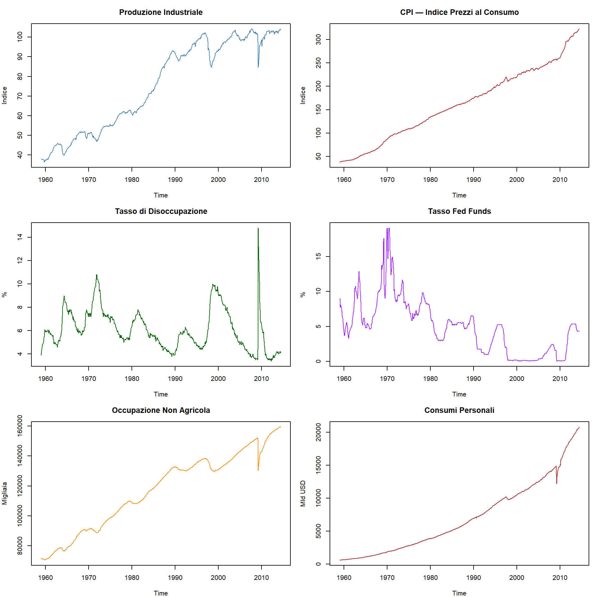
Dall’ispezione visiva emergono chiaramente alcune caratteristiche: la produzione industriale, il CPI, l’occupazione e i consumi personali mostrano un trend crescente di lungo periodo, tipico delle serie I(1). Il tasso di disoccupazione presenta fluttuazioni cicliche attorno a un livello medio, mentre il tasso dei Fed Funds mostra un pattern altamente variabile legato alle decisioni di politica monetaria.
2 Analisi Univariata (MSDE_01)
2.1 Fondamenti teorici
Una serie storica è un insieme di osservazioni misurate sequenzialmente nel tempo. Lo scopo dell’analisi è duplice: comprendere il meccanismo stocastico che genera la serie e prevedere i valori futuri sulla base della storia passata. La caratteristica fondamentale è che le osservazioni non possono essere considerate indipendenti: la dipendenza temporale è la chiave dell’analisi.
2.1.1 Decomposizione classica
L’approccio classico decompone una serie in quattro componenti:
\[X_t = T_t + S_t + C_t + \varepsilon_t\]
dove \(T_t\) è il trend (movimenti di lungo periodo nella media), \(S_t\) sono gli effetti stagionali (fluttuazioni cicliche legate al calendario), \(C_t\) è il ciclo (altre fluttuazioni cicliche come il ciclo economico) e \(\varepsilon_t\) è la componente residuale, con \(\varepsilon_t \sim WN(0, \sigma^2)\).
# Decomposizione additiva della produzione industriale
decomp_prod <- decompose(prod_ind, type = "additive")
plot(decomp_prod, col = "steelblue")
title(main = "Decomposizione Additiva — Produzione Industriale",
outer = TRUE, line = -1)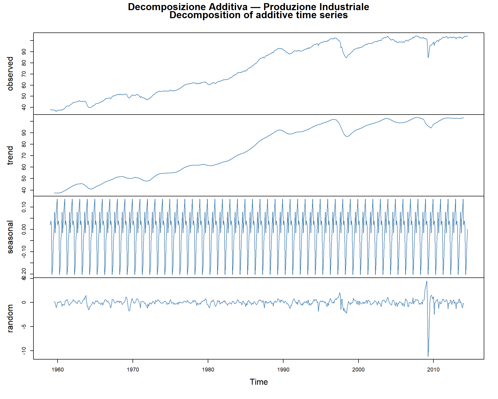
# Decomposizione multiplicativa del CPI (più appropriata per serie con trend esponenziale)
decomp_cpi <- decompose(cpi, type = "multiplicative")
plot(decomp_cpi, col = "firebrick")
title(main = "Decomposizione Multiplicativa — CPI", outer = TRUE, line = -1)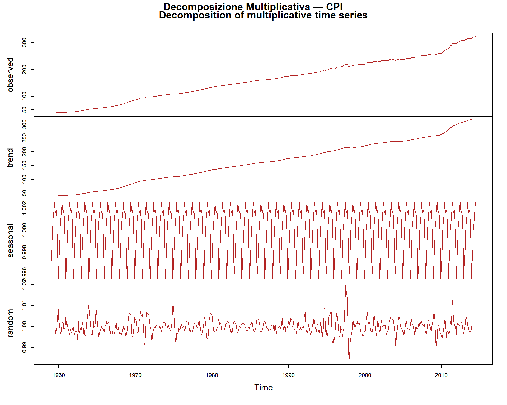
La decomposizione additiva è appropriata quando le fluttuazioni stagionali hanno ampiezza costante, mentre quella multiplicativa è preferibile quando l’ampiezza stagionale cresce proporzionalmente al livello della serie (come nel caso del CPI).
2.1.2 Approccio moderno: Box-Jenkins
L’approccio moderno (Box-Jenkins) mira a costruire un modello stocastico che rappresenti bene i dati, nel senso che la serie osservata possa essere vista come una realizzazione del processo stocastico. Le fasi dell’analisi sono tre: specificazione del modello (identification), stima dei parametri (estimation) e valutazione del modello (evaluation/diagnostic checking).
2.2 Stazionarietà e ACF/PACF
Un concetto fondamentale è quello di stazionarietà debole: un processo \(\{Y_t\}\) è debolmente stazionario se la sua media \(E[Y_t] = \mu\) è costante nel tempo, la varianza \(Var(Y_t) = \sigma^2\) è finita e costante, e la funzione di autocovarianza \(\gamma(h) = Cov(Y_t, Y_{t+h})\) dipende solo dal lag \(h\) e non dal tempo \(t\).
La funzione di autocorrelazione (ACF) campionaria \(\hat{\rho}(k)\) e la funzione di autocorrelazione parziale (PACF) campionaria \(\hat{P}(k)\) sono gli strumenti principali per l’identificazione del modello. Per un processo white noise \(\varepsilon_t \sim WN(0, \sigma^2)\), le autocorrelazioni campionarie sono approssimativamente \(\hat{\rho}(k) \sim N(0, 1/n)\), il che consente di costruire le bande di confidenza \(\pm 1.96/\sqrt{n}\).
I pattern tipici sono: per un AR(p) la ACF decade esponenzialmente (o con oscillazioni smorzate) e la PACF si tronca al lag p; per un MA(q) la ACF si tronca al lag q e la PACF decade esponenzialmente; per un ARMA(p,q) entrambe decadono senza troncamento netto.
# ACF e PACF della produzione industriale in livelli
par(mfrow = c(2, 2), mar = c(4, 4, 3, 1))
acf(log_prod, lag.max = 48, main = "ACF — log(Produzione Industriale)")
pacf(log_prod, lag.max = 48, main = "PACF — log(Produzione Industriale)")
# ACF e PACF delle differenze prime
acf(diff(log_prod), lag.max = 48, main = "ACF — Δlog(Produzione Industriale)")
pacf(diff(log_prod), lag.max = 48, main = "PACF — Δlog(Produzione Industriale)")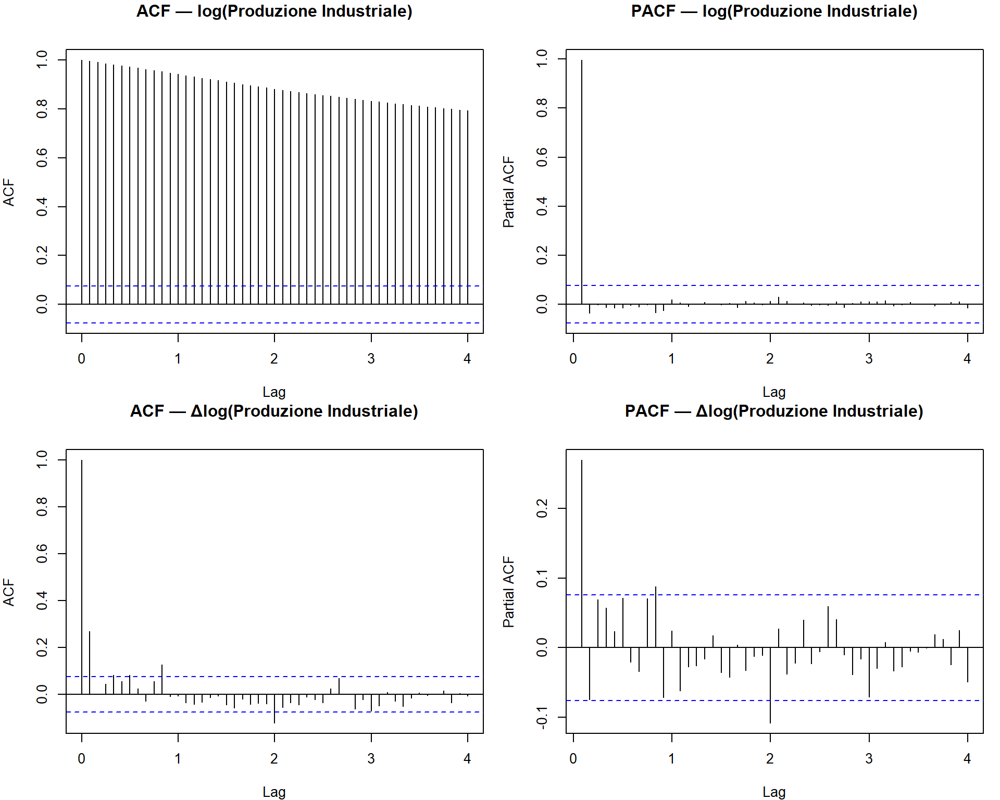
La ACF della serie in livelli decade molto lentamente, segno tipico di non stazionarietà. Dopo la differenziazione, la ACF mostra un pattern compatibile con stazionarietà, con possibili componenti stagionali ai lag multipli di 12.
2.3 Identificazione e stima del modello ARIMA
Un modello ARIMA(p,d,q) è definito come:
\[\phi(B)(1-B)^d Y_t = \theta(B)\varepsilon_t\]
dove \(\phi(B) = 1 - \phi_1 B - \ldots - \phi_p B^p\) è il polinomio autoregressivo, \(\theta(B) = 1 + \theta_1 B + \ldots + \theta_q B^q\) è il polinomio a media mobile, \(d\) è l’ordine di integrazione e \(\varepsilon_t \sim WN(0, \sigma^2)\).
Per dati mensili con stagionalità, si estende al modello SARIMA(p,d,q)(P,D,Q)[12]:
\[\phi(B)\Phi(B^{12})(1-B)^d(1-B^{12})^D Y_t = \theta(B)\Theta(B^{12})\varepsilon_t\]
Utilizziamo la funzione auto.arima() per la selezione automatica basata su criteri informativi (AIC, BIC), verificando poi il risultato con l’analisi manuale di ACF e PACF.
# Selezione automatica del modello ARIMA per log(produzione industriale)
fit_auto <- auto.arima(log_prod, seasonal = TRUE, stepwise = FALSE,
approximation = FALSE, trace = FALSE)
summary(fit_auto)Series: log_prod
ARIMA(0,1,1)(2,0,1)[12] with drift
Coefficients:
ma1 sar1 sar2 sma1 drift
0.2950 0.4529 -0.1281 -0.4437 0.0015
s.e. 0.0375 0.1978 0.0399 0.1975 0.0004
sigma^2 = 8.613e-05: log likelihood = 2174.04
AIC=-4336.07 AICc=-4335.95 BIC=-4309.06
Training set error measures:
ME RMSE MAE MPE MAPE
Training set 1.700008e-05 0.009238885 0.005442995 0.001235653 0.128452
MASE ACF1
Training set 0.1383999 -0.003562318# Verifica manuale: proviamo alcuni modelli alternativi
fit1 <- Arima(log_prod, order = c(1, 1, 1), seasonal = c(0, 1, 1))
fit2 <- Arima(log_prod, order = c(2, 1, 1), seasonal = c(0, 1, 1))
fit3 <- Arima(log_prod, order = c(1, 1, 2), seasonal = c(1, 1, 1))
# Confronto criteri informativi
modelli_arima <- data.frame(
Modello = c("auto.arima", "ARIMA(1,1,1)(0,1,1)[12]",
"ARIMA(2,1,1)(0,1,1)[12]", "ARIMA(1,1,2)(1,1,1)[12]"),
AIC = c(AIC(fit_auto), AIC(fit1), AIC(fit2), AIC(fit3)),
BIC = c(BIC(fit_auto), BIC(fit1), BIC(fit2), BIC(fit3)),
AICc = c(fit_auto$aicc, fit1$aicc, fit2$aicc, fit3$aicc)
)
knitr::kable(modelli_arima, digits = 2,
caption = "Confronto criteri informativi — Modelli ARIMA")| Modello | AIC | BIC | AICc |
|---|---|---|---|
| auto.arima | -4336.07 | -4309.06 | -4335.95 |
| ARIMA(1,1,1)(0,1,1)[12] | -4197.92 | -4179.99 | -4197.86 |
| ARIMA(2,1,1)(0,1,1)[12] | -4195.92 | -4173.51 | -4195.83 |
| ARIMA(1,1,2)(1,1,1)[12] | -4194.22 | -4167.32 | -4194.09 |
2.4 Diagnostica dei residui
La valutazione del modello si basa sull’analisi dei residui, che devono comportarsi come un white noise. I controlli fondamentali sono: assenza di autocorrelazione (verificata tramite ACF dei residui e test di Ljung-Box), normalità dei residui e assenza di eteroschedasticità.
Il test di Ljung-Box generalizzato verifica l’ipotesi nulla \(H_0: \rho(1) = \rho(2) = \ldots = \rho(p) = 0\) contro l’alternativa che almeno una autocorrelazione sia diversa da zero. La statistica test è:
\[Q(p) = T(T+2) \sum_{l=1}^{p} \frac{\hat{\rho}^2(l)}{T-l} \xrightarrow{d} \chi^2(p - p_{par})\]
dove \(p_{par}\) è il numero di parametri stimati nel modello.
# Selezioniamo il modello migliore (quello con AIC minore)
best_arima <- fit_auto # o il modello con AIC più basso dal confronto
# Diagnostica completa
checkresiduals(best_arima)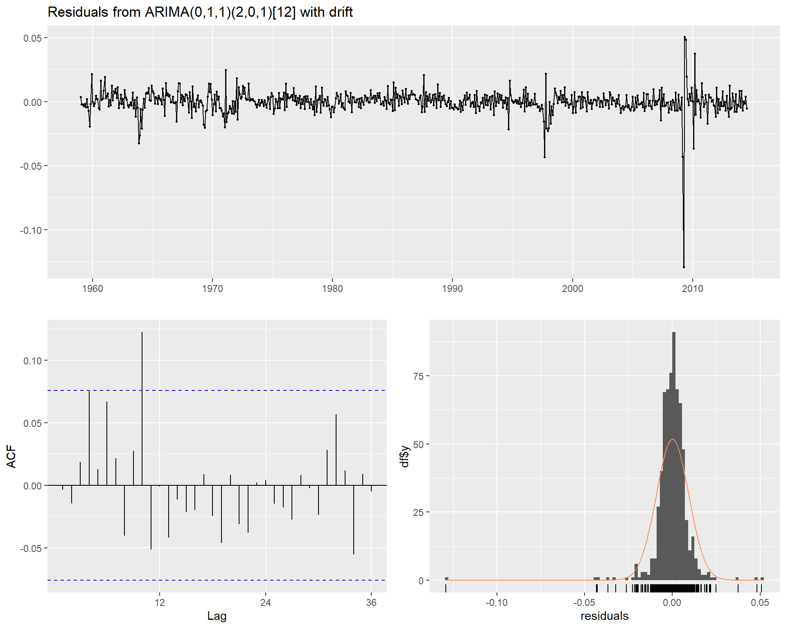
Ljung-Box test
data: Residuals from ARIMA(0,1,1)(2,0,1)[12] with drift
Q* = 26.685, df = 20, p-value = 0.1443
Model df: 4. Total lags used: 24# Test di Ljung-Box a diversi lag
cat("=== Test di Ljung-Box sui residui ===\n")=== Test di Ljung-Box sui residui ===for (lag in c(12, 24, 36)) {
test <- Box.test(residuals(best_arima), lag = lag, type = "Ljung-Box",
fitdf = length(coef(best_arima)))
cat(sprintf("Lag %d: Q = %.3f, p-value = %.4f\n", lag, test$statistic, test$p.value))
}Lag 12: Q = 21.184, p-value = 0.0035
Lag 24: Q = 26.685, p-value = 0.1122
Lag 36: Q = 33.204, p-value = 0.3602# Test di Jarque-Bera per la normalità
jb_test <- jarque.bera.test(residuals(best_arima))
cat(sprintf("Test Jarque-Bera: statistica = %.3f, p-value = %.4f\n",
jb_test$statistic, jb_test$p.value))Test Jarque-Bera: statistica = 103185.368, p-value = 0.0000# QQ-plot
par(mfrow = c(1, 1))
qqnorm(residuals(best_arima), main = "QQ-Plot dei residui ARIMA")
qqline(residuals(best_arima), col = "red")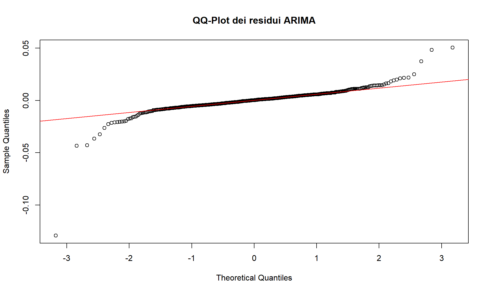
2.5 Previsione univariata
# Previsione a 12 mesi
prev_arima <- forecast(best_arima, h = 12)
plot(prev_arima, main = "Previsione ARIMA — log(Produzione Industriale)",
ylab = "log(Indice)", xlab = "Anno")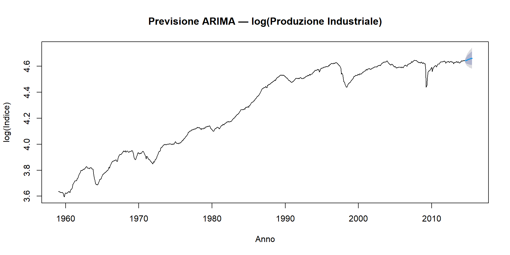
La previsione mostra gli intervalli di confidenza all’80% e al 95%. L’ampiezza crescente degli intervalli riflette l’incertezza che aumenta con l’orizzonte previsivo, una caratteristica fondamentale di tutti i modelli di serie storiche.
3 Analisi Bivariata e Cross-Correlazione (MSDE_02)
3.1 Fondamenti teorici
Quando si considerano più serie storiche congiuntamente, si ottiene una capacità interpretativa e previsiva superiore rispetto all’analisi univariata. Una serie storica multipla \(\mathbf{y}_t\) è rappresentata da un vettore \(k\)-dimensionale:
\[\mathbf{y}_t = [y_{1,t}, y_{2,t}, \ldots, y_{k,t}]'\]
I primi due momenti sono \(E[\mathbf{y}_t] = \boldsymbol{\mu}\) (vettore \(k \times 1\)) e \(V[\mathbf{y}_t] = \boldsymbol{\Sigma}\) (matrice \(k \times k\)).
3.1.1 Funzione di cross-covarianza e cross-correlazione
La funzione di cross-covarianza tra due componenti \(y_{i,t}\) e \(y_{j,t}\) al lag \(l\) è:
\[\gamma_{ij}(l) = Cov(y_{i,t}, y_{j,t-l})\]
e la corrispondente cross-correlazione è:
\[\rho_{ij}(l) = \frac{\gamma_{ij}(l)}{\sqrt{\gamma_{ii}(0) \cdot \gamma_{jj}(0)}}\]
Un aspetto cruciale è che la funzione di cross-covarianza non è simmetrica: \(\gamma_{ij}(l) \neq \gamma_{ij}(-l)\) in generale, ma vale \(\gamma_{ij}(l) = \gamma_{ji}(-l)\). Questo riflette il fatto che la relazione tra due variabili può essere diversa a seconda della direzione temporale.
3.1.2 Test di Ljung-Box multivariato
Per verificare se una serie multipla è priva di auto- e cross-correlazione si usa la generalizzazione multivariata del test di Ljung-Box:
\[Q_k(p) = T^2 \sum_{l=1}^{p} \frac{1}{T-l} \text{tr}\left[\hat{\Gamma}(l)'\hat{\Gamma}(0)^{-1}\hat{\Gamma}(l)\hat{\Gamma}(0)^{-1}\right] \xrightarrow{d} \chi^2(k^2 p)\]
# Cross-correlazione tra coppie di variabili chiave
# Lavoriamo sulle differenze prime per garantire stazionarietà
d_log_prod <- diff(log_prod)
d_disoc <- diff(disoc)
d_log_cpi <- diff(log_cpi)
d_fed <- diff(fed_funds)
par(mfrow = c(3, 1), mar = c(4, 4, 3, 1))
# CCF tra variazione produzione industriale e variazione disoccupazione
ccf(d_log_prod, d_disoc, lag.max = 24,
main = "CCF: Δlog(Prod. Ind.) e Δ(Disoccupazione)",
ylab = "CCF")
# CCF tra variazione CPI e variazione Fed Funds
ccf(d_log_cpi, d_fed, lag.max = 24,
main = "CCF: Δlog(CPI) e Δ(Fed Funds)",
ylab = "CCF")
# CCF tra variazione produzione e variazione CPI
ccf(d_log_prod, d_log_cpi, lag.max = 24,
main = "CCF: Δlog(Prod. Ind.) e Δlog(CPI)",
ylab = "CCF")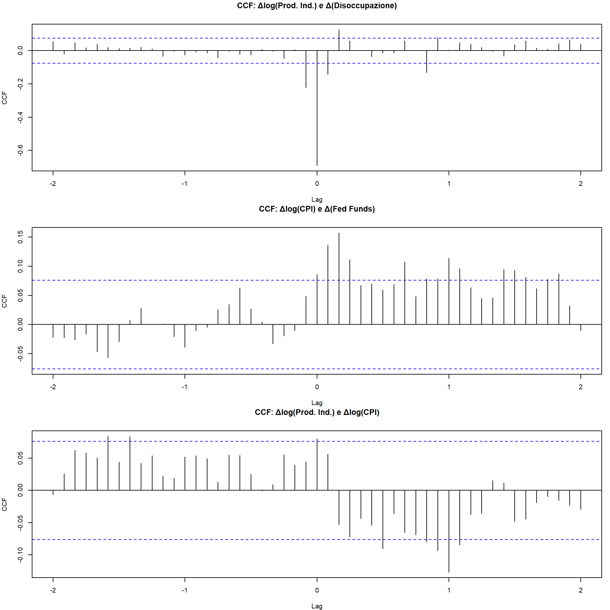
Nell’output della funzione ccf(x, y), i lag negativi indicano che \(x\) anticipa \(y\) (cioè i valori passati di \(x\) sono correlati con il valore corrente di \(y\)), mentre i lag positivi indicano che \(y\) anticipa \(x\). Questo è cruciale per interpretare la direzione della relazione dinamica tra le variabili.
4 Transfer Function Model (MSDE_03)
4.1 Fondamenti teorici
Il modello Transfer Function (TFM) esprime la relazione tra una serie di output \(y_t\) e una serie di input \(x_t\) attraverso un filtro lineare:
\[y_t = \nu(B)x_t + \eta_t\]
dove \(\nu(B) = \sum_{j=0}^{\infty} \nu_j B^j\) è la funzione di trasferimento, i coefficienti \(\nu_j\) sono i pesi della risposta all’impulso (impulse response weights) e \(\eta_t\) è la serie di disturbo (non necessariamente white noise), indipendente da \(x_t\). Il TFM è stabile se \(\sum |\nu_j| < \infty\) e causale se \(\nu_j = 0\) per \(j < 0\).
4.1.1 La relazione tra CCF e TFM
Se le serie sono stazionarie con media zero, la cross-covarianza è legata ai pesi della risposta all’impulso da:
\[\gamma_{yx}(k) = \nu_0 \gamma_x(k) + \nu_1 \gamma_x(k-1) + \nu_2 \gamma_x(k-2) + \ldots\]
Se la serie di input è white noise (\(\rho_x(k) = 0\) per \(k \neq 0\)), allora \(\nu_k = \frac{\sigma_y}{\sigma_x}\rho_{yx}(k)\), cioè la funzione di risposta all’impulso è direttamente proporzionale alla CCF. In caso contrario, la relazione è “contaminata” dall’autocorrelazione dell’input, rendendo necessaria la procedura di prewhitening.
4.1.2 Procedura di costruzione del TFM
- Stimare un modello ARMA per la serie di input \(x_t\): \(\phi_x(B)x_t = \theta_x(B)\alpha_t\)
- Filtrare la serie di output con lo stesso modello per ottenere \(\beta_t = \frac{\phi_x(B)}{\theta_x(B)}y_t\)
- Calcolare la CCF campionaria tra \(\alpha_t\) e \(\beta_t\) per stimare i pesi della risposta all’impulso: \(\hat{\nu}_k = \frac{\hat{\sigma}_\beta}{\hat{\sigma}_\alpha}\hat{\rho}_{\beta\alpha}(k)\)
- Identificare gli ordini \((r, s, b)\) del modello razionale \(\nu(B) = \frac{\omega(B)}{\delta(B)}B^b\)
- Stimare il modello completo e verificare la diagnostica
# Transfer Function: Fed Funds (input) -> Disoccupazione (output)
# Utilizziamo le differenze prime per la stazionarietà
# Allineiamo le serie (entrambe dal 1959 in poi)
input_x <- d_fed # Δ(Fed Funds) come input
output_y <- d_disoc # Δ(Disoccupazione) come output
# Step 1: Modello ARMA per la serie di input (prewhitening)
fit_input <- auto.arima(input_x, seasonal = FALSE, max.p = 5, max.q = 5)
cat("=== Modello ARMA per l'input Δ(Fed Funds) ===\n")=== Modello ARMA per l'input Δ(Fed Funds) ===summary(fit_input)Series: input_x
ARIMA(4,0,0) with zero mean
Coefficients:
ar1 ar2 ar3 ar4
0.4711 -0.1695 -0.0100 -0.0720
s.e. 0.0387 0.0431 0.0432 0.0389
sigma^2 = 0.2209: log likelihood = -440.3
AIC=890.6 AICc=890.69 BIC=913.1
Training set error measures:
ME RMSE MAE MPE MAPE MASE ACF1
Training set -0.005375293 0.4685854 0.2176437 NaN Inf 0.616453 0.0005212256# Step 2: Ottenere i residui (serie prewhitened)
alpha_t <- residuals(fit_input)
# Filtrare l'output con lo stesso modello
# Usiamo la stessa struttura ARMA dell'input
beta_t <- residuals(Arima(output_y, model = fit_input))
# Step 3: CCF tra le serie prewhitened
par(mfrow = c(2, 1), mar = c(4, 4, 3, 1))
ccf(as.numeric(alpha_t), as.numeric(beta_t), lag.max = 20,
main = "CCF prewhitened: α(Fed Funds) e β(Disoccupazione)",
ylab = "CCF")
# Per confronto: CCF senza prewhitening
ccf(as.numeric(input_x), as.numeric(output_y), lag.max = 20,
main = "CCF senza prewhitening: Δ(Fed Funds) e Δ(Disoccupazione)",
ylab = "CCF")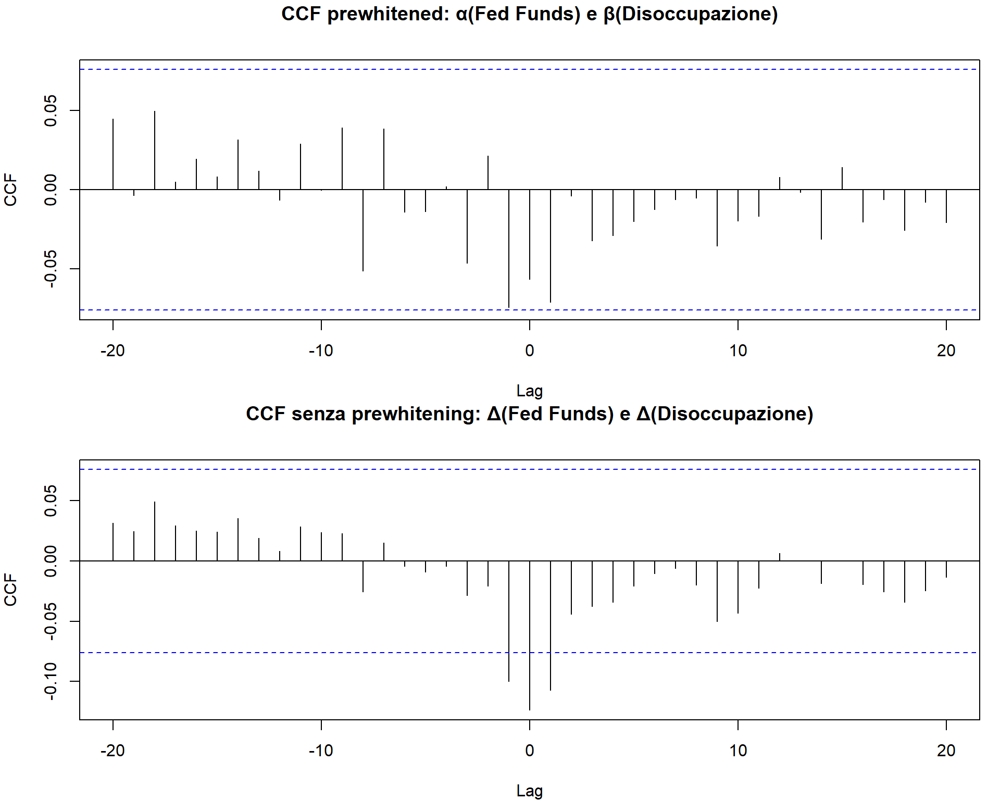
La CCF dopo il prewhitening è più “pulita” e permette di identificare la struttura della funzione di trasferimento. Si noti che \(\hat{\rho}_{\beta\alpha}(k) \approx 0\) per \(k < 0\) conferma la causalità del sistema (l’output non anticipa l’input).
# Step 4-5: Stima del Transfer Function Model
# Identifichiamo il ritardo b e gli ordini (r,s) dalla CCF prewhitened
# Usiamo dynlm per una stima semplificata del modello
# Modello con lag dell'input
library(dynlm)
dati_tfm <- ts.union(output_y, input_x)
colnames(dati_tfm) <- c("y", "x")
# Stima con diversi lag
fit_tfm1 <- dynlm(y ~ L(x, 0:6), data = dati_tfm)
summary(fit_tfm1)
Time series regression with "ts" data:
Start = 1959(8), End = 2014(7)
Call:
dynlm(formula = y ~ L(x, 0:6), data = dati_tfm)
Residuals:
Min 1Q Median 3Q Max
-2.2222 -0.1013 -0.0003 0.1022 10.2832
Coefficients:
Estimate Std. Error t value Pr(>|t|)
(Intercept) -0.002172 0.017934 -0.121 0.904
L(x, 0:6)0 -0.088451 0.038520 -2.296 0.022 *
L(x, 0:6)1 -0.063352 0.042685 -1.484 0.138
L(x, 0:6)2 0.027441 0.043222 0.635 0.526
L(x, 0:6)3 -0.046625 0.043067 -1.083 0.279
L(x, 0:6)4 0.004776 0.043050 0.111 0.912
L(x, 0:6)5 -0.017143 0.042202 -0.406 0.685
L(x, 0:6)6 -0.006653 0.038160 -0.174 0.862
---
Signif. codes: 0 '***' 0.001 '**' 0.01 '*' 0.05 '.' 0.1 ' ' 1
Residual standard error: 0.4606 on 652 degrees of freedom
Multiple R-squared: 0.02048, Adjusted R-squared: 0.009962
F-statistic: 1.947 on 7 and 652 DF, p-value: 0.05996# Diagnostica dei residui del TFM
par(mfrow = c(2, 2), mar = c(4, 4, 3, 1))
plot(residuals(fit_tfm1), main = "Residui TFM", ylab = "Residui", type = "l")
acf(residuals(fit_tfm1), main = "ACF Residui TFM")
pacf(residuals(fit_tfm1), main = "PACF Residui TFM")
qqnorm(residuals(fit_tfm1), main = "QQ-Plot Residui TFM")
qqline(residuals(fit_tfm1), col = "red")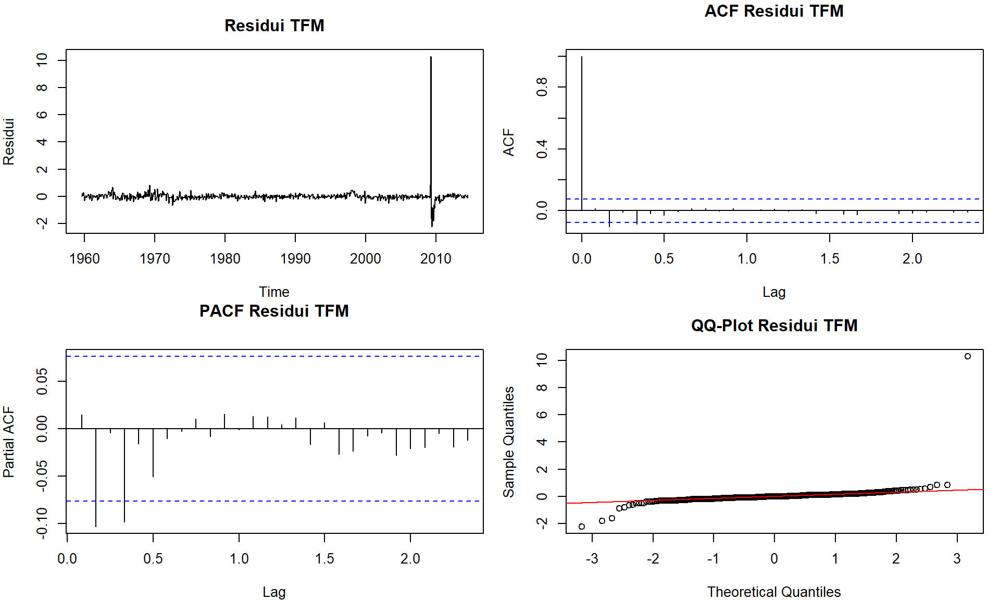
Se i residui mostrano autocorrelazione, la componente di disturbo \(\eta_t\) necessita di un modello ARMA, che va stimato congiuntamente con la funzione di trasferimento.
5 Modelli VAR (MSDE_04)
5.1 Fondamenti teorici
I modelli VAR (Vector AutoRegressive) rappresentano uno degli strumenti più utilizzati in econometria per l’analisi congiunta di più serie storiche. A differenza dei modelli a equazioni simultanee strutturali, nei modelli VAR non è necessario specificare quali variabili sono endogene e quali esogene: tutte le variabili sono trattate come endogene. Questo è un vantaggio importante, poiché la classificazione endogeno/esogeno richiede restrizioni identificative basate su teoria economica che spesso è vaga nelle sue indicazioni.
Un VAR(p) per un vettore \(k\)-dimensionale \(\mathbf{y}_t\) è definito come:
\[\mathbf{y}_t = \boldsymbol{\Phi}_0 + \boldsymbol{\Phi}_1 \mathbf{y}_{t-1} + \boldsymbol{\Phi}_2 \mathbf{y}_{t-2} + \ldots + \boldsymbol{\Phi}_p \mathbf{y}_{t-p} + \boldsymbol{\varepsilon}_t\]
dove \(\boldsymbol{\Phi}_0\) è un vettore di intercette \((k \times 1)\), \(\boldsymbol{\Phi}_i\) sono matrici di coefficienti \((k \times k)\) e \(\boldsymbol{\varepsilon}_t\) è un vettore di innovazioni con \(E[\boldsymbol{\varepsilon}_t] = \mathbf{0}\) e \(E[\boldsymbol{\varepsilon}_t \boldsymbol{\varepsilon}_t'] = \boldsymbol{\Sigma}\).
5.1.1 Stabilità e stazionarietà
La condizione di stabilità (stazionarietà) di un VAR(p) è legata alle radici dell’equazione caratteristica. Per un VAR(1), le condizioni equivalenti sono: gli autovalori di \(\boldsymbol{\Phi}_1\) hanno modulo minore di 1, oppure le radici di \(|\mathbf{I}_k - \boldsymbol{\Phi}_1 z| = 0\) hanno modulo maggiore di 1.
5.1.2 Modelli impliciti per le componenti
Un risultato importante è che ogni componente \(y_{i,t}\) di un VAR(p) con \(k\) variabili segue individualmente un modello ARMA con ordini massimi \((k, k-1)\). Questo mostra come il VAR catturi interdipendenze dinamiche che un approccio univariato non può cogliere.
5.1.3 Selezione dell’ordine
Tre criteri informativi comunemente usati per un VAR(m) sono:
\[AIC(m) = \log|\hat{\boldsymbol{\Sigma}}_m| + \frac{2}{T}mk^2\]
\[BIC(m) = \log|\hat{\boldsymbol{\Sigma}}_m| + \frac{\log(T)}{T}mk^2\]
\[HQ(m) = \log|\hat{\boldsymbol{\Sigma}}_m| + \frac{2\log(\log(T))}{T}mk^2\]
dove \(\hat{\boldsymbol{\Sigma}}_m\) è la stima ML della matrice di covarianza dei residui e \(mk^2\) è il numero di parametri. Il criterio FPE (Final Prediction Error) di Akaike è:
\[FPE(m) = \left(\frac{T + km + 1}{T - km - 1}\right)^k \left|\frac{\boldsymbol{\varepsilon}_m'\boldsymbol{\varepsilon}_m}{T}\right|\]
5.2 Stima del modello VAR
Lavoriamo con tre variabili: produzione industriale, disoccupazione e CPI (in differenze logaritmiche dove appropriato per la stazionarietà).
# Preparazione dati per il VAR
# Utilizziamo le differenze per garantire stazionarietà
var_data <- ts.union(d_log_prod, d_disoc, d_log_cpi)
colnames(var_data) <- c("D_LogProd", "D_Disoc", "D_LogCPI")
# Rimuovere eventuali NA
var_data <- na.omit(var_data)
cat(sprintf("Dimensioni del dataset VAR: %d osservazioni x %d variabili\n",
nrow(var_data), ncol(var_data)))Dimensioni del dataset VAR: 666 osservazioni x 3 variabili# Selezione dell'ordine del VAR
var_select <- VARselect(var_data, lag.max = 12, type = "const")
print(var_select$selection)AIC(n) HQ(n) SC(n) FPE(n)
12 2 1 12 cat("\n=== Tabella completa dei criteri ===\n")
=== Tabella completa dei criteri ===print(round(var_select$criteria[, 1:12], 4)) 1 2 3 4 5 6 7 8
AIC(n) -23.1847 -23.2225 -23.2307 -23.2399 -23.2314 -23.2217 -23.2316 -23.2225
HQ(n) -23.1528 -23.1666 -23.1509 -23.1362 -23.1038 -23.0701 -23.0562 -23.0231
SC(n) -23.1025 -23.0785 -23.0250 -22.9725 -22.9024 -22.8309 -22.7792 -22.7084
FPE(n) 0.0000 0.0000 0.0000 0.0000 0.0000 0.0000 0.0000 0.0000
9 10 11 12
AIC(n) -23.2235 -23.2801 -23.3298 -23.3451
HQ(n) -23.0002 -23.0329 -23.0587 -23.0501
SC(n) -22.6477 -22.6426 -22.6306 -22.5842
FPE(n) 0.0000 0.0000 0.0000 0.0000# Stima del VAR con l'ordine suggerito dal BIC (più parsimonioso)
p_opt <- var_select$selection["SC(n)"] # BIC = SC (Schwarz Criterion)
cat(sprintf("Ordine selezionato dal BIC: p = %d\n", p_opt))Ordine selezionato dal BIC: p = 1fit_var <- VAR(var_data, p = p_opt, type = "const")
summary(fit_var)
VAR Estimation Results:
=========================
Endogenous variables: D_LogProd, D_Disoc, D_LogCPI
Deterministic variables: const
Sample size: 665
Log Likelihood: 4890.201
Roots of the characteristic polynomial:
0.5965 0.2599 0.1651
Call:
VAR(y = var_data, p = p_opt, type = "const")
Estimation results for equation D_LogProd:
==========================================
D_LogProd = D_LogProd.l1 + D_Disoc.l1 + D_LogCPI.l1 + const
Estimate Std. Error t value Pr(>|t|)
D_LogProd.l1 0.3247068 0.0517473 6.275 6.33e-10 ***
D_Disoc.l1 0.0017842 0.0010926 1.633 0.103
D_LogCPI.l1 0.0990758 0.0985421 1.005 0.315
const 0.0007017 0.0004879 1.438 0.151
---
Signif. codes: 0 '***' 0.001 '**' 0.01 '*' 0.05 '.' 0.1 ' ' 1
Residual standard error: 0.009379 on 661 degrees of freedom
Multiple R-Squared: 0.07742, Adjusted R-squared: 0.07323
F-statistic: 18.49 on 3 and 661 DF, p-value: 1.58e-11
Estimation results for equation D_Disoc:
========================================
D_Disoc = D_LogProd.l1 + D_Disoc.l1 + D_LogCPI.l1 + const
Estimate Std. Error t value Pr(>|t|)
D_LogProd.l1 -17.95938 2.45258 -7.323 7.09e-13 ***
D_Disoc.l1 -0.22918 0.05178 -4.426 1.13e-05 ***
D_LogCPI.l1 0.15990 4.67044 0.034 0.973
const 0.02685 0.02312 1.161 0.246
---
Signif. codes: 0 '***' 0.001 '**' 0.01 '*' 0.05 '.' 0.1 ' ' 1
Residual standard error: 0.4445 on 661 degrees of freedom
Multiple R-Squared: 0.07607, Adjusted R-squared: 0.07188
F-statistic: 18.14 on 3 and 661 DF, p-value: 2.538e-11
Estimation results for equation D_LogCPI:
=========================================
D_LogCPI = D_LogProd.l1 + D_Disoc.l1 + D_LogCPI.l1 + const
Estimate Std. Error t value Pr(>|t|)
D_LogProd.l1 0.0084153 0.0164811 0.511 0.610
D_Disoc.l1 0.0002980 0.0003480 0.856 0.392
D_LogCPI.l1 0.5957800 0.0313849 18.983 < 2e-16 ***
const 0.0012847 0.0001554 8.268 7.48e-16 ***
---
Signif. codes: 0 '***' 0.001 '**' 0.01 '*' 0.05 '.' 0.1 ' ' 1
Residual standard error: 0.002987 on 661 degrees of freedom
Multiple R-Squared: 0.3541, Adjusted R-squared: 0.3511
F-statistic: 120.8 on 3 and 661 DF, p-value: < 2.2e-16
Covariance matrix of residuals:
D_LogProd D_Disoc D_LogCPI
D_LogProd 8.796e-05 -0.0028102 1.666e-06
D_Disoc -2.810e-03 0.1975895 -1.317e-04
D_LogCPI 1.666e-06 -0.0001317 8.923e-06
Correlation matrix of residuals:
D_LogProd D_Disoc D_LogCPI
D_LogProd 1.00000 -0.67407 0.05946
D_Disoc -0.67407 1.00000 -0.09915
D_LogCPI 0.05946 -0.09915 1.00000# Verifica stabilità: le radici inverse devono essere all'interno del cerchio unitario
roots_var <- roots(fit_var)
cat("=== Radici inverse del polinomio caratteristico ===\n")=== Radici inverse del polinomio caratteristico ===print(roots_var)[1] 0.5964564 0.2599448 0.1650895cat(sprintf("\nTutte le radici < 1? %s\n", ifelse(all(roots_var < 1), "SÌ — VAR stabile", "NO")))
Tutte le radici < 1? SÌ — VAR stabile# Grafico delle radici
plot(fit_var, names = colnames(var_data)[1])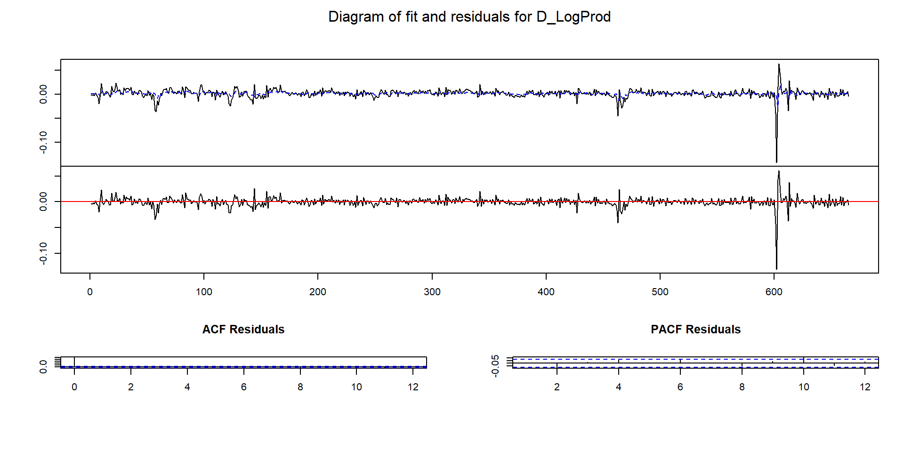
5.3 Diagnostica del VAR
# Test sui residui
# Portmanteau test (Ljung-Box multivariato)
serial_test <- serial.test(fit_var, lags.pt = 16, type = "PT.asymptotic")
cat("=== Test Portmanteau per autocorrelazione residua ===\n")=== Test Portmanteau per autocorrelazione residua ===print(serial_test)
Portmanteau Test (asymptotic)
data: Residuals of VAR object fit_var
Chi-squared = 294.58, df = 135, p-value = 6.672e-14$serial
Portmanteau Test (asymptotic)
data: Residuals of VAR object fit_var
Chi-squared = 294.58, df = 135, p-value = 6.672e-14# Test di normalità multivariata
norm_test <- normality.test(fit_var, multivariate.only = TRUE)
cat("\n=== Test di normalità multivariata ===\n")
=== Test di normalità multivariata ===print(norm_test)$JB
JB-Test (multivariate)
data: Residuals of VAR object fit_var
Chi-squared = 614243, df = 6, p-value < 2.2e-16
$Skewness
Skewness only (multivariate)
data: Residuals of VAR object fit_var
Chi-squared = 7591, df = 3, p-value < 2.2e-16
$Kurtosis
Kurtosis only (multivariate)
data: Residuals of VAR object fit_var
Chi-squared = 606652, df = 3, p-value < 2.2e-16$jb.mul
$jb.mul$JB
JB-Test (multivariate)
data: Residuals of VAR object fit_var
Chi-squared = 614243, df = 6, p-value < 2.2e-16
$jb.mul$Skewness
Skewness only (multivariate)
data: Residuals of VAR object fit_var
Chi-squared = 7591, df = 3, p-value < 2.2e-16
$jb.mul$Kurtosis
Kurtosis only (multivariate)
data: Residuals of VAR object fit_var
Chi-squared = 606652, df = 3, p-value < 2.2e-16# Grafici dei residui
par(mfrow = c(3, 2), mar = c(4, 4, 3, 1))
for (i in 1:3) {
res_i <- residuals(fit_var)[, i]
plot(res_i, type = "l", main = paste("Residui —", colnames(var_data)[i]),
ylab = "Residui")
acf(res_i, main = paste("ACF Residui —", colnames(var_data)[i]))
}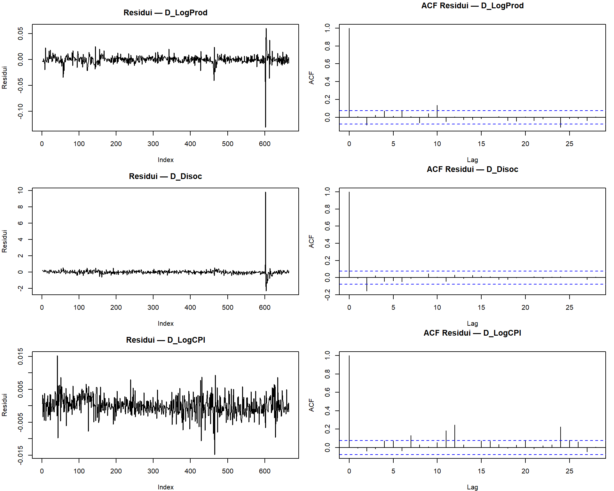
5.4 Granger-Causalità
La Granger-causalità valuta se i valori passati di una variabile \(y_{1t}\) aiutano a prevedere un’altra variabile \(y_{2t}\). Formalmente, \(y_{1t}\) è Granger-causale per \(y_{2t}\) se:
\[\boldsymbol{\Sigma}_t(h|\Omega_t) < \boldsymbol{\Sigma}_t(h|\Omega_t \setminus \{y_{1s}: s \leq t\})\]
cioè se il MSE di previsione migliora includendo l’informazione di \(y_{1t}\). Il test si basa su un’ipotesi nulla di assenza di causalità (i coefficienti dei lag di \(y_{1t}\) nell’equazione di \(y_{2t}\) sono tutti zero) e si distribuisce come un \(F\) sotto \(H_0\).
È importante sottolineare che il termine “causalità” è improprio: la Granger-causalità indica solo una correlazione tra il valore corrente di una variabile e i valori passati di un’altra, non una relazione causale in senso stretto.
# Test di Granger-causalità per tutte le coppie
cat("=== Test di Granger-Causalità ===\n\n")=== Test di Granger-Causalità ===nomi_var <- colnames(var_data)
for (i in 1:3) {
causa <- causality(fit_var, cause = nomi_var[i])
cat(sprintf("--- %s causa le altre variabili? ---\n", nomi_var[i]))
cat(sprintf("F-statistica = %.3f, p-value = %.4f\n\n",
causa$Granger$statistic, causa$Granger$p.value))
}--- D_LogProd causa le altre variabili? ---
F-statistica = 26.834, p-value = 0.0000
--- D_Disoc causa le altre variabili? ---
F-statistica = 1.623, p-value = 0.1976
--- D_LogCPI causa le altre variabili? ---
F-statistica = 0.970, p-value = 0.37935.5 Funzioni di Risposta all’Impulso (IRF)
Le impulse response functions tracciano la risposta delle variabili dipendenti nel VAR a shock unitari su ciascuna variabile. Per ottenerle, si esprime il VAR in forma VMA (Vector Moving Average). Per un VAR stabile, lo shock dovrebbe gradualmente esaurirsi.
Per risolvere il problema della correlazione contemporanea tra gli errori delle diverse equazioni, si utilizza la decomposizione di Cholesky, che impone un ordinamento ricorsivo delle variabili. Questo ordinamento implica che la prima variabile non è influenzata contemporaneamente dalle altre, la seconda può essere influenzata solo dalla prima, e così via.
# IRF ortogonalizzate (Cholesky)
irf_result <- irf(fit_var, impulse = nomi_var, response = nomi_var,
n.ahead = 24, ortho = TRUE, boot = TRUE, runs = 500)
# Grafici
par(mfrow = c(3, 3), mar = c(4, 4, 3, 1))
plot(irf_result)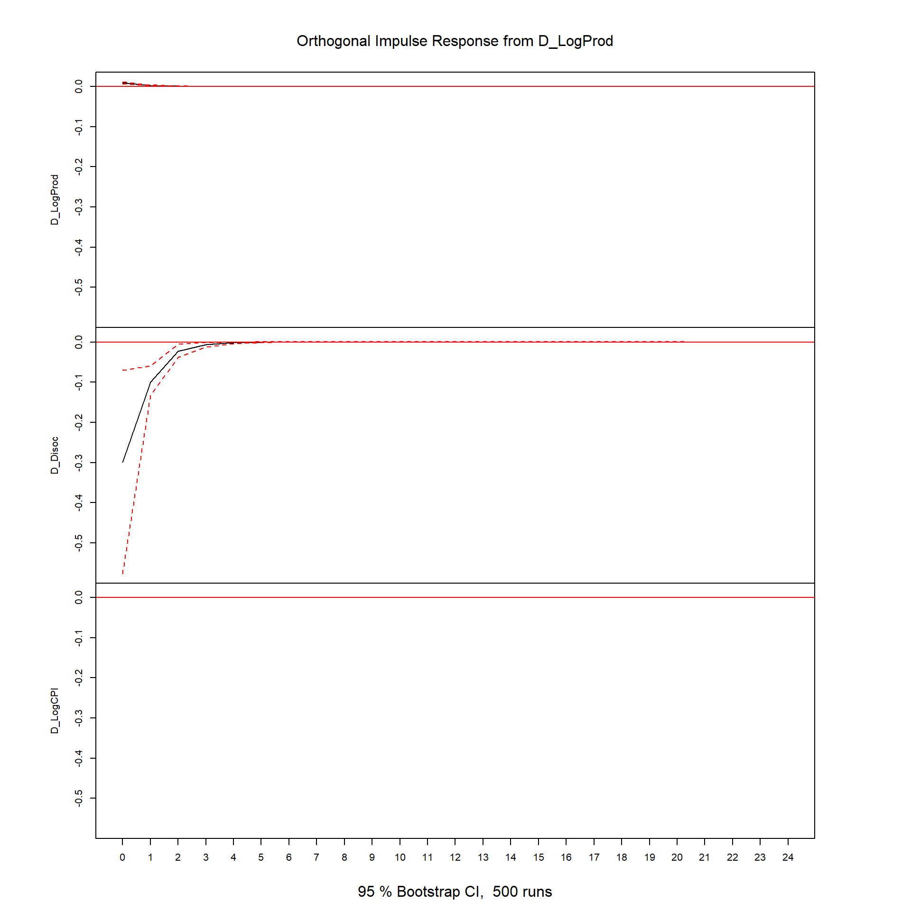
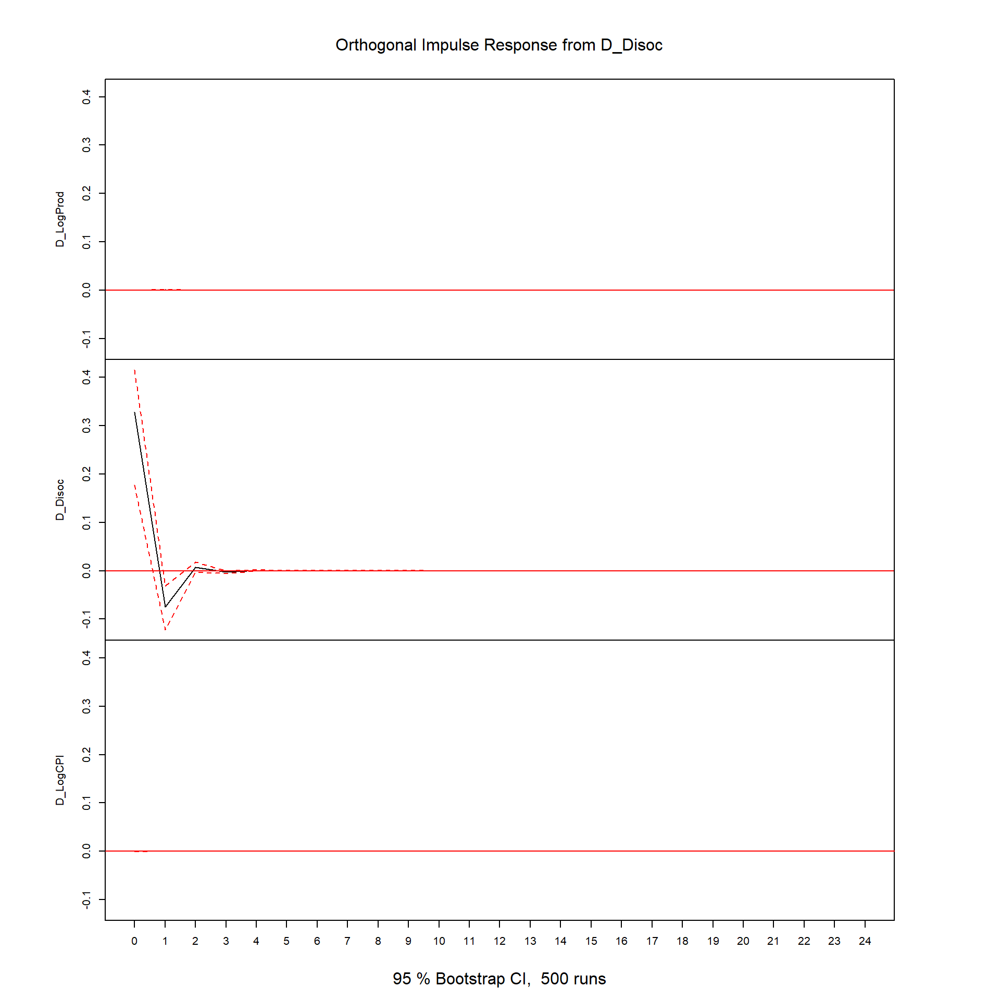

# IRF selezionate: shock alla produzione -> effetti su tutte le variabili
irf_prod <- irf(fit_var, impulse = "D_LogProd", response = nomi_var,
n.ahead = 24, ortho = TRUE, boot = TRUE, runs = 500, ci = 0.95)
plot(irf_prod, main = "IRF: Shock alla Produzione Industriale")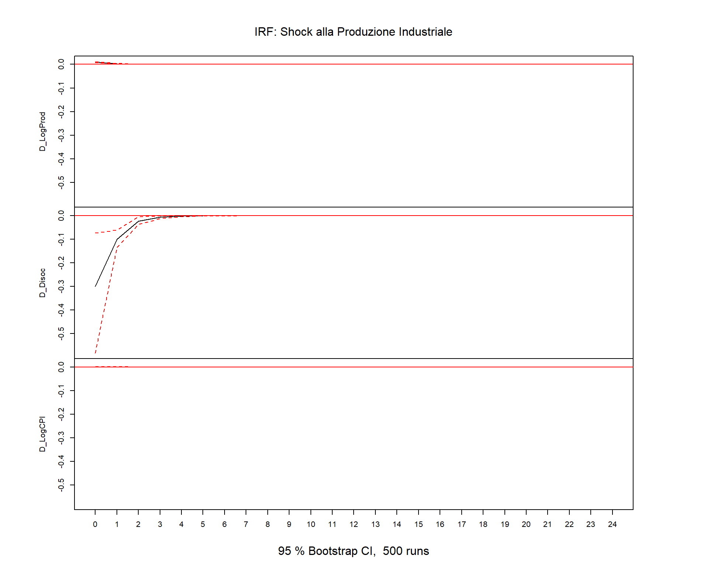
L’ordinamento delle variabili nel VAR influenza i risultati delle IRF ortogonalizzate. Come suggerito dalla teoria, è opportuno verificare la sensibilità dei risultati invertendo l’ordinamento. Quando i residui sono poco correlati tra equazioni, l’ordinamento ha poca influenza.
5.6 Decomposizione della Varianza (FEVD)
La FEVD (Forecast Error Variance Decomposition) quantifica la proporzione della varianza dell’errore di previsione di ciascuna variabile attribuibile a shock provenienti da ciascuna delle variabili del sistema, a diversi orizzonti temporali.
# FEVD
fevd_result <- fevd(fit_var, n.ahead = 24)
# Grafici
plot(fevd_result)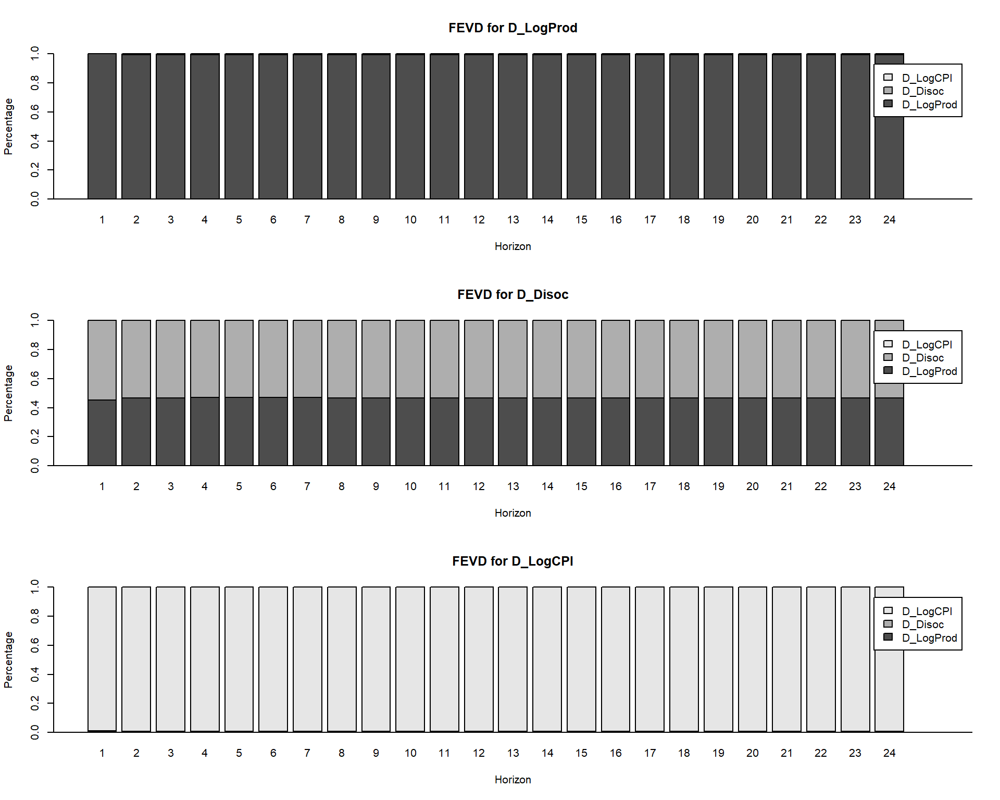
# Tabella FEVD a orizzonti selezionati
cat("=== FEVD a 1, 6, 12, 24 mesi ===\n\n")=== FEVD a 1, 6, 12, 24 mesi ===for (var_name in nomi_var) {
cat(sprintf("--- Variabile: %s ---\n", var_name))
fevd_tab <- fevd_result[[var_name]]
print(round(fevd_tab[c(1, 6, 12, 24), ], 4))
cat("\n")
}--- Variabile: D_LogProd ---
D_LogProd D_Disoc D_LogCPI
[1,] 1.0000 0.0000 0.0000
[2,] 0.9944 0.0033 0.0022
[3,] 0.9944 0.0033 0.0023
[4,] 0.9944 0.0033 0.0023
--- Variabile: D_Disoc ---
D_LogProd D_Disoc D_LogCPI
[1,] 0.4544 0.5456 0e+00
[2,] 0.4689 0.5309 2e-04
[3,] 0.4689 0.5309 2e-04
[4,] 0.4689 0.5309 2e-04
--- Variabile: D_LogCPI ---
D_LogProd D_Disoc D_LogCPI
[1,] 0.0035 0.0064 0.9901
[2,] 0.0032 0.0045 0.9923
[3,] 0.0032 0.0045 0.9923
[4,] 0.0032 0.0045 0.99235.7 Previsione VAR
# Previsione a 12 mesi
prev_var <- predict(fit_var, n.ahead = 12, ci = 0.95)
plot(prev_var)
6 Cointegrazione (MSDE_05)
6.1 Fondamenti teorici
6.1.1 Integrazione e test di radice unitaria
Una serie è integrata di ordine \(d\), indicata come \(I(d)\), se necessita di \(d\) differenziazioni per diventare stazionaria. Per verificare la presenza di una radice unitaria si utilizza il test di Dickey-Fuller, basato sulla regressione:
\[\Delta y_t = \alpha + \gamma t + \delta y_{t-1} + \varepsilon_t\]
L’ipotesi nulla è \(H_0: \delta = 0\) (presenza di radice unitaria). Se \(\delta = 0\), la serie è \(I(1)\) con trend stocastico; se \(\delta < 0\), la serie è stazionaria (eventualmente attorno a un trend). La statistica test segue una distribuzione non standard (distribuzione di Dickey-Fuller), con quantili spostati a sinistra rispetto alla normale.
Il test ADF (Augmented Dickey-Fuller) estende il DF a strutture più complesse:
\[\Delta y_t = \alpha + \gamma t + \delta y_{t-1} + \sum_{j=1}^{p} \beta_j \Delta y_{t-j} + \varepsilon_t\]
La scelta del numero di lag \(p\) è cruciale: troppo pochi lag non rimuovono l’autocorrelazione nei residui (bias nel test), troppi lag consumano gradi di libertà e riducono la potenza. Si può usare la procedura iterativa di Ng e Perron o criteri informativi.
La procedura step-by-step prevede: (1) stimare il modello con intercetta e trend, testare \(\delta = 0\); se si rifiuta, la serie è stazionaria; se non si rifiuta, (2) verificare la significatività del trend con test congiunti (\(\phi_2\), \(\phi_3\)); (3) se il trend non è significativo, riestimare senza trend e ripetere il test.
# Test ADF per tutte le variabili in livelli e differenze
cat("=========================================\n")=========================================cat(" TEST DI RADICE UNITARIA (ADF)\n") TEST DI RADICE UNITARIA (ADF)cat("=========================================\n\n")=========================================serie_test <- list(
"log(Produzione Industriale)" = log_prod,
"log(CPI)" = log_cpi,
"Disoccupazione" = disoc,
"Fed Funds" = fed_funds,
"log(Occupazione)" = log_occupaz,
"log(Consumi)" = log_consumi
)
risultati_adf <- data.frame(
Serie = character(),
Livelli_tau = numeric(), Livelli_pval = character(),
Diff_tau = numeric(), Diff_pval = character(),
Ordine = character(),
stringsAsFactors = FALSE
)
for (nome in names(serie_test)) {
serie <- serie_test[[nome]]
# Test in livelli (con trend e intercetta)
adf_lev <- ur.df(serie, type = "trend", lags = 12, selectlags = "AIC")
tau_lev <- adf_lev@teststat[1, "tau3"]
cv_lev <- adf_lev@cval[1, ]
# Test in differenze (con intercetta)
dserie <- diff(serie)
adf_diff <- ur.df(dserie, type = "drift", lags = 12, selectlags = "AIC")
tau_diff <- adf_diff@teststat[1, "tau2"]
cv_diff <- adf_diff@cval[1, ]
# Determinare significatività
sig_lev <- ifelse(tau_lev < cv_lev["5pct"], "< 0.05", "> 0.05")
sig_diff <- ifelse(tau_diff < cv_diff["5pct"], "< 0.05", "> 0.05")
ordine <- ifelse(sig_lev == "< 0.05", "I(0)",
ifelse(sig_diff == "< 0.05", "I(1)", "I(2)?"))
risultati_adf <- rbind(risultati_adf, data.frame(
Serie = nome,
Livelli_tau = round(tau_lev, 3),
Livelli_pval = sig_lev,
Diff_tau = round(tau_diff, 3),
Diff_pval = sig_diff,
Ordine = ordine,
stringsAsFactors = FALSE
))
cat(sprintf("--- %s ---\n", nome))
cat(sprintf(" Livelli: tau3 = %.3f (CV 5%%: %.3f) -> %s\n",
tau_lev, cv_lev["5pct"], sig_lev))
cat(sprintf(" Differenze: tau2 = %.3f (CV 5%%: %.3f) -> %s\n",
tau_diff, cv_diff["5pct"], sig_diff))
cat(sprintf(" -> Serie %s\n\n", ordine))
}--- log(Produzione Industriale) ---
Livelli: tau3 = -1.916 (CV 5%: -3.410) -> > 0.05
Differenze: tau2 = -6.581 (CV 5%: -2.860) -> < 0.05
-> Serie I(1)
--- log(CPI) ---
Livelli: tau3 = -2.664 (CV 5%: -3.410) -> > 0.05
Differenze: tau2 = -2.998 (CV 5%: -2.860) -> < 0.05
-> Serie I(1)
--- Disoccupazione ---
Livelli: tau3 = -3.538 (CV 5%: -3.410) -> < 0.05
Differenze: tau2 = -14.275 (CV 5%: -2.860) -> < 0.05
-> Serie I(0)
--- Fed Funds ---
Livelli: tau3 = -3.046 (CV 5%: -3.410) -> > 0.05
Differenze: tau2 = -6.389 (CV 5%: -2.860) -> < 0.05
-> Serie I(1)
--- log(Occupazione) ---
Livelli: tau3 = -1.933 (CV 5%: -3.410) -> > 0.05
Differenze: tau2 = -19.573 (CV 5%: -2.860) -> < 0.05
-> Serie I(1)
--- log(Consumi) ---
Livelli: tau3 = -2.626 (CV 5%: -3.410) -> > 0.05
Differenze: tau2 = -5.634 (CV 5%: -2.860) -> < 0.05
-> Serie I(1)knitr::kable(risultati_adf,
col.names = c("Serie", "τ (livelli)", "p-value",
"τ (diff)", "p-value", "Ordine I(d)"),
caption = "Risultati dei test ADF di radice unitaria")| Serie | τ (livelli) | p-value | τ (diff) | p-value | Ordine I(d) | |
|---|---|---|---|---|---|---|
| 5pct | log(Produzione Industriale) | -1.916 | > 0.05 | -6.581 | < 0.05 | I(1) |
| 5pct1 | log(CPI) | -2.664 | > 0.05 | -2.998 | < 0.05 | I(1) |
| 5pct2 | Disoccupazione | -3.538 | < 0.05 | -14.275 | < 0.05 | I(0) |
| 5pct3 | Fed Funds | -3.046 | > 0.05 | -6.389 | < 0.05 | I(1) |
| 5pct4 | log(Occupazione) | -1.933 | > 0.05 | -19.573 | < 0.05 | I(1) |
| 5pct5 | log(Consumi) | -2.626 | > 0.05 | -5.634 | < 0.05 | I(1) |
6.1.2 Esempio dettagliato: procedura step-by-step per log(CPI)
# Procedura completa per log(CPI) come nell'esempio del corso
cat("=== Procedura ADF step-by-step per log(CPI) ===\n\n")=== Procedura ADF step-by-step per log(CPI) ===# Step 1: Modello con trend e intercetta
adf_step1 <- ur.df(log_cpi, type = "trend", lags = 12, selectlags = "AIC")
cat("Step 1: Modello con trend e intercetta\n")Step 1: Modello con trend e intercettasummary(adf_step1)
###############################################
# Augmented Dickey-Fuller Test Unit Root Test #
###############################################
Test regression trend
Call:
lm(formula = z.diff ~ z.lag.1 + 1 + tt + z.diff.lag)
Residuals:
Min 1Q Median 3Q Max
-0.0158949 -0.0015446 -0.0000941 0.0016003 0.0145767
Coefficients:
Estimate Std. Error t value Pr(>|t|)
(Intercept) 9.334e-03 3.127e-03 2.985 0.00295 **
z.lag.1 -2.020e-03 7.584e-04 -2.664 0.00791 **
tt 4.189e-06 2.181e-06 1.921 0.05519 .
z.diff.lag1 4.866e-01 3.911e-02 12.442 < 2e-16 ***
z.diff.lag2 -5.804e-02 4.322e-02 -1.343 0.17974
z.diff.lag3 -3.174e-02 4.320e-02 -0.735 0.46271
z.diff.lag4 6.274e-02 4.323e-02 1.451 0.14716
z.diff.lag5 5.281e-03 4.323e-02 0.122 0.90281
z.diff.lag6 -8.115e-02 4.277e-02 -1.898 0.05820 .
z.diff.lag7 1.312e-01 4.284e-02 3.062 0.00229 **
z.diff.lag8 -5.798e-02 4.316e-02 -1.343 0.17959
z.diff.lag9 4.300e-03 4.307e-02 0.100 0.92052
z.diff.lag10 6.124e-02 4.299e-02 1.424 0.15480
z.diff.lag11 1.396e-01 4.301e-02 3.246 0.00123 **
z.diff.lag12 1.104e-01 3.892e-02 2.836 0.00471 **
---
Signif. codes: 0 '***' 0.001 '**' 0.01 '*' 0.05 '.' 0.1 ' ' 1
Residual standard error: 0.002783 on 639 degrees of freedom
Multiple R-squared: 0.4537, Adjusted R-squared: 0.4418
F-statistic: 37.91 on 14 and 639 DF, p-value: < 2.2e-16
Value of test-statistic is: -2.6642 5.2982 5.3873
Critical values for test statistics:
1pct 5pct 10pct
tau3 -3.96 -3.41 -3.12
phi2 6.09 4.68 4.03
phi3 8.27 6.25 5.34# Step 2: Verificare se servono drift e trend (phi2, phi3)
cat("\nStep 2: Test congiunti\n")
Step 2: Test congiunticat(sprintf("tau3 = %.3f\n", adf_step1@teststat[1, "tau3"]))tau3 = -2.664cat(sprintf("phi2 (H0: delta=alpha=gamma=0) = %.3f\n", adf_step1@teststat[1, "phi2"]))phi2 (H0: delta=alpha=gamma=0) = 5.298cat(sprintf("phi3 (H0: delta=gamma=0) = %.3f\n", adf_step1@teststat[1, "phi3"]))phi3 (H0: delta=gamma=0) = 5.3876.2 Cointegrazione
6.2.1 Concetto
Un insieme di variabili \(I(1)\) è cointegrato se esiste una combinazione lineare \(\boldsymbol{\beta}'\mathbf{y}_t\) che è \(I(0)\). Il vettore \(\boldsymbol{\beta}\) è detto vettore di cointegrazione e rappresenta una relazione di equilibrio di lungo periodo. Deviazioni dall’equilibrio sono temporanee: le forze di mercato riportano il sistema verso l’equilibrio.
6.2.2 Procedura di Engle-Granger
La procedura si articola in tre passi:
- Verificare che tutte le variabili siano \(I(1)\) (condizione necessaria per la cointegrazione)
- Stimare la relazione di cointegrazione con OLS: \(y_{1,t} = \beta_2 y_{2,t} + \ldots + \beta_k y_{k,t} + \varepsilon_t\)
- Testare la stazionarietà dei residui \(\hat{\varepsilon}_t\) con un test ADF, usando valori critici specifici (Engle-Yoo / MacKinnon) che tengono conto del fatto che \(\hat{\boldsymbol{\beta}}\) è stimato
Se i residui sono \(I(0)\), le variabili sono cointegrate. I valori critici sono più stringenti rispetto al test ADF standard, perché per costruzione l’OLS minimizza la varianza dei residui, rendendoli “più stazionari” anche in assenza di vera cointegrazione.
Sotto cointegrazione, si stima poi il modello a correzione dell’errore (ECM):
\[\Delta y_t = \beta_0 \Delta x_t + \tilde{\alpha}(\hat{\varepsilon}_{t-1}) + \eta_t\]
dove \(\tilde{\alpha}\) è la velocità di aggiustamento verso l’equilibrio (deve essere negativo per avere convergenza).
# Procedura di Engle-Granger
# Selezioniamo le variabili I(1): log(Prod), log(CPI), log(Occupazione), log(Consumi)
# Step 1: Regressione di cointegrazione (OLS)
# log(Consumi) = f(log(Produzione), log(CPI))
coint_reg <- lm(log_consumi ~ log_prod + log_cpi)
summary(coint_reg)
Call:
lm(formula = log_consumi ~ log_prod + log_cpi)
Residuals:
Min 1Q Median 3Q Max
-0.12743 -0.04731 -0.02212 0.06147 0.15706
Coefficients:
Estimate Std. Error t value Pr(>|t|)
(Intercept) -0.93507 0.05374 -17.40 <2e-16 ***
log_prod 0.74402 0.03047 24.42 <2e-16 ***
log_cpi 1.26042 0.01731 72.81 <2e-16 ***
---
Signif. codes: 0 '***' 0.001 '**' 0.01 '*' 0.05 '.' 0.1 ' ' 1
Residual standard error: 0.0721 on 664 degrees of freedom
Multiple R-squared: 0.9945, Adjusted R-squared: 0.9944
F-statistic: 5.967e+04 on 2 and 664 DF, p-value: < 2.2e-16# Step 2: Estrarre i residui e testarli per radice unitaria
residui_coint <- ts(residuals(coint_reg), start = start(log_consumi),
frequency = 12)
par(mfrow = c(2, 2), mar = c(4, 4, 3, 1))
plot(residui_coint, main = "Residui di cointegrazione", ylab = "Residui")
abline(h = 0, col = "red", lty = 2)
acf(residui_coint, main = "ACF residui di cointegrazione")
pacf(residui_coint, main = "PACF residui di cointegrazione")
# Test ADF sui residui (valori critici Engle-Granger)
adf_coint <- ur.df(residui_coint, type = "none", lags = 12, selectlags = "AIC")
cat("\n=== Test ADF sui residui di cointegrazione ===\n")
=== Test ADF sui residui di cointegrazione ===summary(adf_coint)
###############################################
# Augmented Dickey-Fuller Test Unit Root Test #
###############################################
Test regression none
Call:
lm(formula = z.diff ~ z.lag.1 - 1 + z.diff.lag)
Residuals:
Min 1Q Median 3Q Max
-0.037221 -0.004127 -0.000368 0.004048 0.069208
Coefficients:
Estimate Std. Error t value Pr(>|t|)
z.lag.1 -0.005253 0.004178 -1.257 0.2091
z.diff.lag 0.095174 0.039000 2.440 0.0149 *
---
Signif. codes: 0 '***' 0.001 '**' 0.01 '*' 0.05 '.' 0.1 ' ' 1
Residual standard error: 0.007589 on 652 degrees of freedom
Multiple R-squared: 0.01088, Adjusted R-squared: 0.007842
F-statistic: 3.585 on 2 and 652 DF, p-value: 0.0283
Value of test-statistic is: -1.2574
Critical values for test statistics:
1pct 5pct 10pct
tau1 -2.58 -1.95 -1.62cat("\nNota: I valori critici per il test di Engle-Granger con 3 variabili I(1)")
Nota: I valori critici per il test di Engle-Granger con 3 variabili I(1)cat("\nsono più stringenti dei DF standard:")
sono più stringenti dei DF standard:cat("\n1%: -3.96, 5%: -3.41, 10%: -3.13 (con intercetta)\n")
1%: -3.96, 5%: -3.41, 10%: -3.13 (con intercetta)cat(sprintf("Statistica tau: %.3f\n", adf_coint@teststat[1]))Statistica tau: -1.257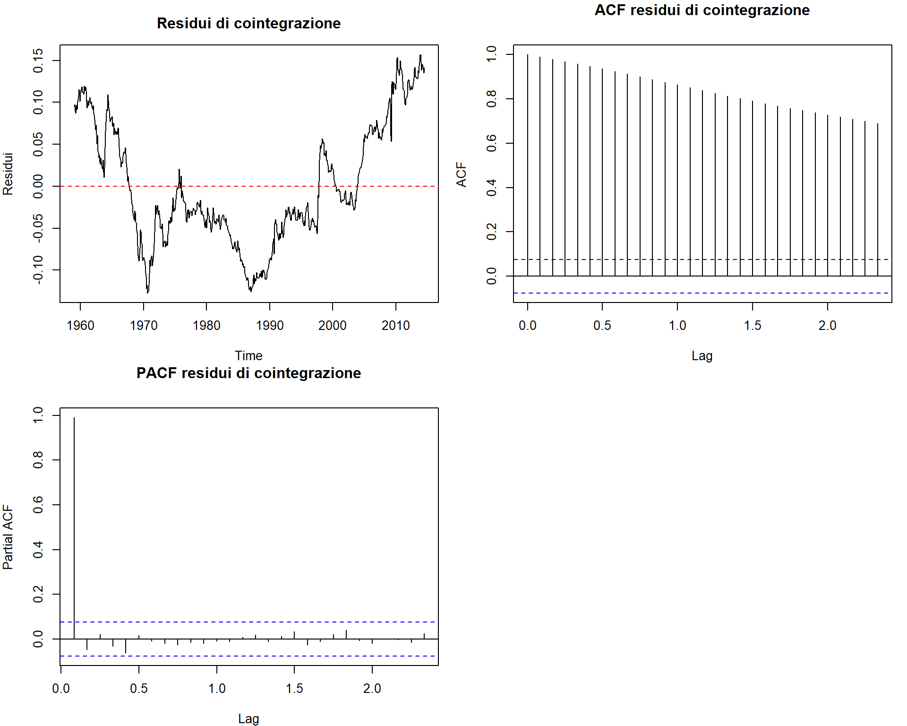
# Step 3: Stima del modello ECM (Error Correction Model)
# Se c'è cointegrazione, stimiamo l'ECM
d_log_consumi <- diff(log_consumi)
d_log_prod_c <- diff(log_prod)
d_log_cpi_c <- diff(log_cpi)
ect <- residui_coint[-length(residui_coint)] # ECT ritardato di 1
# Allineare le lunghezze
n <- min(length(d_log_consumi), length(d_log_prod_c),
length(d_log_cpi_c), length(ect))
dati_ecm <- data.frame(
dy = tail(d_log_consumi, n),
dx1 = tail(d_log_prod_c, n),
dx2 = tail(d_log_cpi_c, n),
ect_lag = tail(ect, n)
)
fit_ecm <- lm(dy ~ dx1 + dx2 + ect_lag, data = dati_ecm)
cat("=== Modello a Correzione dell'Errore (ECM) ===\n")=== Modello a Correzione dell'Errore (ECM) ===summary(fit_ecm)
Call:
lm(formula = dy ~ dx1 + dx2 + ect_lag, data = dati_ecm)
Residuals:
Min 1Q Median 3Q Max
-0.051511 -0.003214 -0.000360 0.002825 0.068510
Coefficients:
Estimate Std. Error t value Pr(>|t|)
(Intercept) 0.0029950 0.0003420 8.756 < 2e-16 ***
dx1 0.5378646 0.0265407 20.266 < 2e-16 ***
dx2 0.4487751 0.0698152 6.428 2.47e-10 ***
ect_lag -0.0003486 0.0035926 -0.097 0.923
---
Signif. codes: 0 '***' 0.001 '**' 0.01 '*' 0.05 '.' 0.1 ' ' 1
Residual standard error: 0.006639 on 662 degrees of freedom
Multiple R-squared: 0.4184, Adjusted R-squared: 0.4158
F-statistic: 158.8 on 3 and 662 DF, p-value: < 2.2e-16cat(sprintf("\nCoeff. ECT (velocità di aggiustamento): %.4f\n", coef(fit_ecm)["ect_lag"]))
Coeff. ECT (velocità di aggiustamento): -0.0003cat("Un valore negativo e significativo indica convergenza verso l'equilibrio.\n")Un valore negativo e significativo indica convergenza verso l'equilibrio.6.2.3 Procedura di Johansen
La procedura di Johansen è più generale della Engle-Granger: permette di testare il rango di cointegrazione \(r\) e stimare molteplici relazioni di cointegrazione in un contesto VECM (Vector Error Correction Model):
\[\Delta \mathbf{y}_t = \boldsymbol{\Pi} \mathbf{y}_{t-1} + \sum_{i=1}^{k-1} \boldsymbol{\Gamma}_i \Delta \mathbf{y}_{t-i} + \mathbf{u}_t\]
dove \(\boldsymbol{\Pi} = \boldsymbol{\alpha}\boldsymbol{\beta}'\), con \(\boldsymbol{\beta}\) matrice dei vettori di cointegrazione e \(\boldsymbol{\alpha}\) matrice dei coefficienti di aggiustamento (loading).
Il test si basa sull’esame del rango della matrice \(\boldsymbol{\Pi}\) attraverso i suoi autovalori \(\hat{\lambda}_1 \geq \hat{\lambda}_2 \geq \ldots \geq \hat{\lambda}_g\). Le due statistiche test sono:
\[\lambda_{trace}(r) = -T \sum_{i=r+1}^{g} \ln(1 - \hat{\lambda}_i)\]
\[\lambda_{max}(r, r+1) = -T \ln(1 - \hat{\lambda}_{r+1})\]
Se \(\boldsymbol{\Pi}\) ha rango zero, non c’è cointegrazione. Se ha rango pieno \(g\), le variabili sono stazionarie. Se ha rango \(r\) con \(0 < r < g\), esistono \(r\) relazioni di cointegrazione.
# Preparazione dati per Johansen
# Usiamo le variabili in livelli (log)
johansen_data <- ts.union(log_consumi, log_prod, log_cpi)
colnames(johansen_data) <- c("log_Consumi", "log_Prod", "log_CPI")
johansen_data <- na.omit(johansen_data)
# Selezione del lag ottimale per il VECM
# Il VECM con k lag corrisponde a un VAR con k+1 lag
var_select_j <- VARselect(johansen_data, lag.max = 12, type = "const")
cat("=== Selezione ordine per il VECM ===\n")=== Selezione ordine per il VECM ===print(var_select_j$selection)AIC(n) HQ(n) SC(n) FPE(n)
12 3 2 12 k_vecm <- var_select_j$selection["SC(n)"] # BIC# Test trace di Johansen
cat("=== Test Trace di Johansen ===\n")=== Test Trace di Johansen ===jo_trace <- ca.jo(johansen_data, type = "trace", ecdet = "const", K = k_vecm)
summary(jo_trace)
######################
# Johansen-Procedure #
######################
Test type: trace statistic , without linear trend and constant in cointegration
Eigenvalues (lambda):
[1] 2.188697e-01 9.929081e-03 3.857047e-03 -1.107990e-16
Values of teststatistic and critical values of test:
test 10pct 5pct 1pct
r <= 2 | 2.57 7.52 9.24 12.97
r <= 1 | 9.21 17.85 19.96 24.60
r = 0 | 173.47 32.00 34.91 41.07
Eigenvectors, normalised to first column:
(These are the cointegration relations)
log_Consumi.l2 log_Prod.l2 log_CPI.l2 constant
log_Consumi.l2 1.000000 1.0000000 1.00000000 1.0000000
log_Prod.l2 -1.291446 0.1723343 -3.18823868 -0.7011990
log_CPI.l2 -1.873110 -1.9884504 -0.09285321 -1.2130840
constant 7.956966 0.5870580 5.57670313 0.5266998
Weights W:
(This is the loading matrix)
log_Consumi.l2 log_Prod.l2 log_CPI.l2 constant
log_Consumi.d 2.636798e-03 -0.0016568365 1.326130e-03 -2.135511e-15
log_Prod.d 2.140456e-05 -0.0001129765 2.217716e-03 -5.520917e-15
log_CPI.d 8.129246e-04 0.0013135495 2.493228e-05 2.114103e-15# Test max eigenvalue di Johansen
cat("=== Test Max Eigenvalue di Johansen ===\n")=== Test Max Eigenvalue di Johansen ===jo_eigen <- ca.jo(johansen_data, type = "eigen", ecdet = "const", K = k_vecm)
summary(jo_eigen)
######################
# Johansen-Procedure #
######################
Test type: maximal eigenvalue statistic (lambda max) , without linear trend and constant in cointegration
Eigenvalues (lambda):
[1] 2.188697e-01 9.929081e-03 3.857047e-03 -1.107990e-16
Values of teststatistic and critical values of test:
test 10pct 5pct 1pct
r <= 2 | 2.57 7.52 9.24 12.97
r <= 1 | 6.64 13.75 15.67 20.20
r = 0 | 164.26 19.77 22.00 26.81
Eigenvectors, normalised to first column:
(These are the cointegration relations)
log_Consumi.l2 log_Prod.l2 log_CPI.l2 constant
log_Consumi.l2 1.000000 1.0000000 1.00000000 1.0000000
log_Prod.l2 -1.291446 0.1723343 -3.18823868 -0.7011990
log_CPI.l2 -1.873110 -1.9884504 -0.09285321 -1.2130840
constant 7.956966 0.5870580 5.57670313 0.5266998
Weights W:
(This is the loading matrix)
log_Consumi.l2 log_Prod.l2 log_CPI.l2 constant
log_Consumi.d 2.636798e-03 -0.0016568365 1.326130e-03 -2.135511e-15
log_Prod.d 2.140456e-05 -0.0001129765 2.217716e-03 -5.520917e-15
log_CPI.d 8.129246e-04 0.0013135495 2.493228e-05 2.114103e-15# Stima del VECM con il rango di cointegrazione identificato
# Supponiamo r = 1 (da verificare con i risultati dei test sopra)
# Se i test indicano r diverso, modificare di conseguenza
cat("=== Stima del VECM ===\n")=== Stima del VECM ===# Determiniamo il rango dai risultati del test
# (il rango è il numero di ipotesi H0 rifiutate in sequenza)
vecm <- cajorls(jo_trace, r = 1)
cat("\n--- Vettore di cointegrazione (beta normalizzato) ---\n")
--- Vettore di cointegrazione (beta normalizzato) ---print(vecm$beta) ect1
log_Consumi.l2 1.000000
log_Prod.l2 -1.291446
log_CPI.l2 -1.873110
constant 7.956966cat("\n--- Coefficienti di aggiustamento (alpha) ---\n")
--- Coefficienti di aggiustamento (alpha) ---print(vecm$rlm$coefficients[1, ])log_Consumi.d log_Prod.d log_CPI.d
2.636798e-03 2.140456e-05 8.129246e-04 # Conversione VECM -> VAR per previsioni e diagnostica
vecm_var <- vec2var(jo_trace, r = 1)
# Diagnostica
serial_vecm <- serial.test(vecm_var, lags.pt = 16, type = "PT.asymptotic")
cat("=== Test Portmanteau su residui VECM ===\n")=== Test Portmanteau su residui VECM ===print(serial_vecm)
Portmanteau Test (asymptotic)
data: Residuals of VAR object vecm_var
Chi-squared = 296.16, df = 129, p-value = 3.553e-15$serial
Portmanteau Test (asymptotic)
data: Residuals of VAR object vecm_var
Chi-squared = 296.16, df = 129, p-value = 3.553e-15# Previsione dal VECM
prev_vecm <- predict(vecm_var, n.ahead = 12, ci = 0.95)
plot(prev_vecm)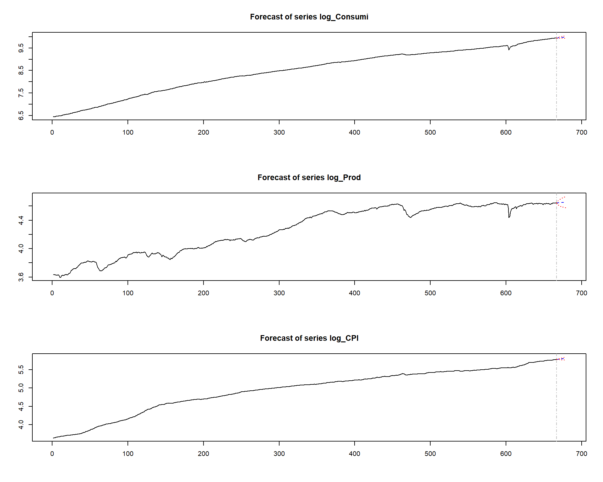
7 Confronto tra Modelli e Selezione Finale
7.1 Riepilogo dei modelli stimati
In questo progetto sono stati stimati diversi modelli per analizzare le serie macroeconomiche USA:
- ARIMA univariato: modello per la singola serie (produzione industriale), cattura la dinamica temporale individuale inclusa la stagionalità.
- Transfer Function Model: relazione unidirezionale input-output tra Fed Funds e disoccupazione, con prewhitening per eliminare la contaminazione dell’autocorrelazione dell’input.
- VAR: modello multivariato simmetrico per produzione, disoccupazione e CPI, che tratta tutte le variabili come endogene.
- VECM: modello a correzione dell’errore per consumi, produzione e CPI, che incorpora le relazioni di equilibrio di lungo periodo.
7.2 Confronto quantitativo
# Confronto basato sulla previsione in-sample e criteri informativi
cat("=== CONFRONTO TRA MODELLI ===\n\n")=== CONFRONTO TRA MODELLI ===# 1. ARIMA
cat("1. ARIMA univariato (Produzione Industriale)\n")1. ARIMA univariato (Produzione Industriale)cat(sprintf(" AIC = %.2f, BIC = %.2f\n", AIC(best_arima), BIC(best_arima))) AIC = -4336.07, BIC = -4309.06cat(sprintf(" σ² residui = %.6f\n", best_arima$sigma2)) σ² residui = 0.000086# 2. VAR
cat("\n2. VAR multivariato\n")
2. VAR multivariatofor (i in 1:3) {
eq_name <- names(fit_var$varresult)[i]
aic_i <- AIC(fit_var$varresult[[i]])
bic_i <- BIC(fit_var$varresult[[i]])
cat(sprintf(" Eq. %s: AIC = %.2f, BIC = %.2f\n", eq_name, aic_i, bic_i))
} Eq. D_LogProd: AIC = -4317.00, BIC = -4294.50
Eq. D_Disoc: AIC = 814.84, BIC = 837.34
Eq. D_LogCPI: AIC = -5838.73, BIC = -5816.23# 3. Confronto previsivo: RMSE in-sample per la produzione industriale
rmse_arima <- sqrt(mean(residuals(best_arima)^2))
rmse_var <- sqrt(mean(residuals(fit_var)[, "D_LogProd"]^2, na.rm = TRUE))
cat(sprintf("\n--- RMSE in-sample per Δlog(Prod) ---\n"))
--- RMSE in-sample per Δlog(Prod) ---cat(sprintf(" ARIMA: %.6f\n", rmse_arima)) ARIMA: 0.009239cat(sprintf(" VAR: %.6f\n", rmse_var)) VAR: 0.0093517.3 Confronto qualitativo: differenze tra i modelli
confronto <- data.frame(
Criterio = c("N. variabili", "Relazioni dinamiche",
"Relazioni di lungo periodo", "Direzione causalità",
"Stagionalità", "Previsione",
"Interpretabilità", "N. parametri"),
ARIMA = c("1 (univariato)", "Solo autocorrelazione",
"No (stazionario/differenziato)", "N/A",
"Sì (SARIMA)", "Solo variabile target",
"Alta", "Basso"),
TFM = c("2 (input-output)", "Unidirezionale",
"No", "Imposta dal ricercatore",
"Possibile", "Solo variabile output",
"Media", "Medio"),
VAR = c("k (tutte endogene)", "Bidirezionali/multilaterali",
"No (serie stazionarie)", "Testata (Granger)",
"Possibile", "Tutte le variabili",
"Media (IRF, FEVD)", "Alto (k²p)"),
VECM = c("k (tutte endogene)", "Bidirezionali + equilibrio",
"Sì (cointegrazione)", "Testata + ECT",
"Possibile", "Tutte + convergenza LR",
"Alta (relaz. economiche)", "Alto")
)
knitr::kable(confronto, caption = "Confronto qualitativo tra i modelli")| Criterio | ARIMA | TFM | VAR | VECM |
|---|---|---|---|---|
| N. variabili | 1 (univariato) | 2 (input-output) | k (tutte endogene) | k (tutte endogene) |
| Relazioni dinamiche | Solo autocorrelazione | Unidirezionale | Bidirezionali/multilaterali | Bidirezionali + equilibrio |
| Relazioni di lungo periodo | No (stazionario/differenziato) | No | No (serie stazionarie) | Sì (cointegrazione) |
| Direzione causalità | N/A | Imposta dal ricercatore | Testata (Granger) | Testata + ECT |
| Stagionalità | Sì (SARIMA) | Possibile | Possibile | Possibile |
| Previsione | Solo variabile target | Solo variabile output | Tutte le variabili | Tutte + convergenza LR |
| Interpretabilità | Alta | Media | Media (IRF, FEVD) | Alta (relaz. economiche) |
| N. parametri | Basso | Medio | Alto (k²p) | Alto |
7.4 Discussione e selezione del modello migliore
La scelta del modello “migliore” non è univoca e dipende dall’obiettivo dell’analisi.
Per la previsione univariata a breve termine, il modello ARIMA (o SARIMA) è spesso la scelta più efficiente: è parsimonioso, cattura la stagionalità, e non richiede la specificazione di relazioni tra variabili. Il suo limite è che ignora completamente l’informazione contenuta in altre variabili potenzialmente rilevanti.
Per comprendere le interazioni dinamiche tra variabili macroeconomiche (come produzione, inflazione e disoccupazione), il VAR è lo strumento naturale. La Granger-causalità, le IRF e la FEVD forniscono un quadro completo delle interdipendenze. Tuttavia, il VAR richiede serie stazionarie e non cattura relazioni di equilibrio di lungo periodo.
Il Transfer Function Model è appropriato quando la teoria economica suggerisce una relazione unidirezionale chiara tra input e output (es. la politica monetaria influenza la disoccupazione con un ritardo). Il suo vantaggio è la parsimonia rispetto al VAR e la possibilità di modellare esplicitamente la struttura dei ritardi.
Il VECM è il modello più completo quando le serie sono \(I(1)\) e cointegrate: incorpora sia le dinamiche di breve periodo (attraverso i termini in differenze, come il VAR) sia le relazioni di equilibrio di lungo periodo (attraverso il termine di correzione dell’errore). Il VECM è quindi preferibile al VAR in differenze, poiché quest’ultimo ignorerebbe le relazioni di lungo periodo, perdendo informazione rilevante contenuta nei livelli delle serie.
In sintesi: la scelta dipende dall’obiettivo specifico dell’analisi, dalla natura dei dati (stazionari o integrati, cointegrati o meno), e dal compromesso tra complessità del modello e interpretabilità dei risultati. Per serie macroeconomiche \(I(1)\) con relazioni di equilibrio — come quelle analizzate in questo progetto — il VECM rappresenta generalmente la scelta metodologicamente più appropriata.
8 Appendice: Pacchetti R utilizzati
sessionInfo()R version 4.5.2 (2025-10-31 ucrt)
Platform: x86_64-w64-mingw32/x64
Running under: Windows 11 x64 (build 26200)
Matrix products: default
LAPACK version 3.12.1
locale:
[1] LC_COLLATE=Italian_Italy.utf8 LC_CTYPE=Italian_Italy.utf8
[3] LC_MONETARY=Italian_Italy.utf8 LC_NUMERIC=C
[5] LC_TIME=Italian_Italy.utf8
time zone: Europe/Rome
tzcode source: internal
attached base packages:
[1] stats graphics grDevices utils datasets methods base
other attached packages:
[1] gridExtra_2.3 ggplot2_4.0.2 dynlm_0.3-6 vars_1.6-1
[5] lmtest_0.9-40 strucchange_1.5-4 sandwich_3.1-1 zoo_1.8-15
[9] MASS_7.3-65 urca_1.3-4 forecast_9.0.0 tseries_0.10-59
[13] readxl_1.4.5
loaded via a namespace (and not attached):
[1] generics_0.1.4 lattice_0.22-7 digest_0.6.39 magrittr_2.0.4
[5] evaluate_1.0.5 grid_4.5.2 RColorBrewer_1.1-3 fastmap_1.2.0
[9] cellranger_1.1.0 jsonlite_2.0.0 nnet_7.3-20 Formula_1.2-5
[13] scales_1.4.0 abind_1.4-8 cli_3.6.5 rlang_1.1.6
[17] withr_3.0.2 yaml_2.3.12 tools_4.5.2 parallel_4.5.2
[21] dplyr_1.1.4 colorspace_2.1-2 curl_7.0.0 vctrs_0.6.5
[25] R6_2.6.1 lifecycle_1.0.5 car_3.1-5 pkgconfig_2.0.3
[29] pillar_1.11.1 gtable_0.3.6 glue_1.8.0 quantmod_0.4.28
[33] Rcpp_1.1.0 xfun_0.56 tibble_3.3.0 tidyselect_1.2.1
[37] rstudioapi_0.18.0 knitr_1.51 farver_2.1.2 htmltools_0.5.9
[41] nlme_3.1-168 labeling_0.4.3 carData_3.0-6 rmarkdown_2.30
[45] xts_0.14.1 timeDate_4052.112 fracdiff_1.5-3 compiler_4.5.2
[49] S7_0.2.1 quadprog_1.5-8 TTR_0.24.4